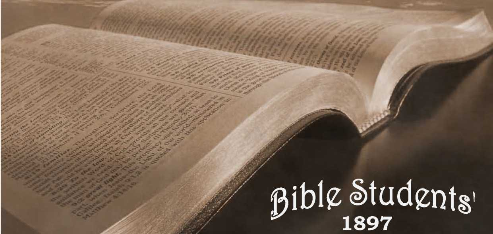
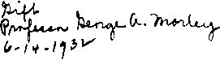

No. 39—What Say the Scriptures About Spiritualism?
Tj&hat
Sa3
^Qri'ptvcres ffibcrat
PROOFS
THAT IT IS DEMONISM.
— ALSO —
Who am “He Spirits to Prison?”
AM Why an They Then?
-------*-------
>897.
WATCH TOWER BIBLE A TRACT 80GOBTT, ALLEGHENY, PA., U. S. A.
'J'HE NECESSITY for this little brochure lies in the fact that Spiritism is showing an increased activity of late, and meeting with considerable success in entrapping Christians who are feeling dissatisfied with their present attainments and craving spiritual food and a better foundation for faith.
The aim is to show the unscripturalness of Spiritism, and to point those who hunger and thirst for truth in the direction of God’s Word — the counsel of the Most High.
‘ Thou shalt guide me with thy counsel, and afterward receive me to glory.”—Psa. 73 : 24.
Sample tracts sent free, on application to
\ WATCH TOWER BIBLE & TRACT SOCIETY,
\ ’ ALLEGHENY, PA., U. 8. A.
COPYBIGHT
1897.
PROOFS THAT IT IS DEMONISM.
^1 HAT which we believe to be the truth respedt-<2L ing Spiritism is antagonized from two stand
points. (i) The majority of people have no confidence in Spiritism, but believe its claimed manifestations and proofs are fraudulent. (2) An increasingly large number are disposed to deny the existence of the evil spirit beings called demons, and of the prince of demons, called in the Scriptures the Devil and Satan.
Rev. Adam Clark, D. D., has well said,—
I *‘Satan knows well that those who deny his being
will not be afraid of his power and influence; will not watch against his wiles and devices; will not pray to God for deliverance from the Evil One; will not expedt
* him to be trampled down under their feet, if he has no
existence; and, consequently, they will become an easy and unopposing prey to the enemy of their souls. By leading men to disbelieve and deny his existence, he throws them off their guard. He is then their complete master, and they are led captive by him at his* will. It is well known that among all those who make
■ any profession of religion, those who deny the exist
ence of the Devil, are those who pray little or none at all; and are, apparently, as careless about th$ exist-
Digitized by Google t
v
L
ence of God as they are about the being of the Devil. Duty to God is with them out of the question; for those who do not pray, especially in private,— and I never saw a devil-denier who did,—have no religion of any kind, except the form, whatever pretentions they may choose to make.”
If it be asked how Spiritism could do injury to those who consider its claims to be deceptions and frauds and its votaries to be dupes, we answer that a large majority of its votaries are those who atone time thoroughly and heartily denied its claims and considered them impositions. Those who most thoroughly disbelieve in Spiritism are often the most ready to test its professed claims; and when convinced that many of its claims are genuine and many of its manifestations
supernatural, these former disbelievers are more liable to become its devotees: whereas, if they had known just what Spiritism is, and how and by what power it operates, they would be on guard, and their judgment would have a support and guidance which it otherwise lacks. It is the lack of the true knowledge of Spiritism (imparted through the Scriptures and confirmed by indisputable evidences from outside the Scriptures) which causes so many to fall a prey to this delusion.
True, there are frauds committed in the name of Spiritism; but these are chiefly in connection with attempted * ‘materializations. ’ ’ That Spiritists have done and can do, through some power or agency, many wonderful works beyond the power of man, has been abundantly proved in a variety of cases—some of them before scientific men, total unbelievers. Tambourines
have been played while in the air beyond the reach of human hand and suspended by some invisible power;
Qhair^ hav^ been lifted Into the ^ir while people were
Digitized by Cjoogle
sitting upon them, and without any connection with any visible power or agency; mediums have been floated through the air, etc. The rapping tests, the tabletipping tests, the autograph tests and the slate-writing tests have been proved over and over again, to the satisfaction of hundreds of intelligent people in various parts of the world And Spiritism reckons amongst its adherents judges, lawyers, business-men and numbers of women of ability. These people have tested the claims of Spiritism and have candidly avowed their faith in it. And it is unwise, to say the least, to sneer at such as fools or knaves—fools if simply deluded by tricks and slight of hand; knaves if they are willingly and knowingly lending their time and influence to the perpetration of frauds.
The writer was inclined to be skeptical with reference to all the various claims of Spiritism until convinced to the contrary by a Christian man, in whose testimony he was justified in having full confidence. This friend was not a believer in Spiritism but, being thrown into the company of some Spiritists for an evening, thesuggestion was made, “Let us have a seance.’* The company present assented; our friend remaining from curiosity. They sat down to a table, placed their hands upon it in the usual manner, and one of the number present being a medium inquired, “Are there any spirits present?” The answer indicated by raps upon the table—one for A, two for B, three for C, etc., spelled out the information that spirits were present, but that they would hold no communication that evening. The medium asked “Why?” The answer rapped out was, “Because new mediums are being appointed aU over the United States.” The company wasdisap-pointed and through the medium asked that as a test the name of some prominent person dying that night should be communicated. The request was complied with and the name of a Russian dignitary, which we cannot now recall, was spelled out. This was before the Atlantic cable was laid, and my friend, anxious to test the matter, kept watch of the newspapers and finally, nearly a month after (the time requisite for Russian mails in those days) he saw the announcement of the death of the Russian notable bearing that very name.
Our friend was convinced that Spiritism was not all a “hoax,” and was anxious for another meeting. When it took place, in view of the answer at the previous meeting, the medium inquired, “Are there any mediums present? and, if so, how many?” The answer was, “Four.” The medium asked the spirit to please indicate which four of those present were mediums, and as each one called his name the mediums were indicated by a rap upon the table, by some invisible agent. Our friend was one of those indicated and right proud he felt of the honor. This occurred in Wheeling, W. Va. Shortly after he came to Allegheny, Pa., and visited an aunt, a widow, who with her family resided here. Anxious to display his newly conferred powers as a medium, he asked his aunt and her daughter to join him in a “seance. ” They were surprised, and the daughter said, “Why, are you a medium? I am a rapping medium also, brother Harry is a tipping medium and mother is a writing and trance medium.” Our friend had never witnessed the powers of any but rapping mediums, and was very anxious that his aunt should display the powers of her mediumship, and was
shown writing done by her which was an exadt facsimile of his dead uncle’s autograph upon checks. And strange, too, his uncle wrote a fine hand, while his aunt could not write at all, except under this influence.
Wishing to test her powers as a talking medium, the three surrounded a small table, and the aunt called for a spirit to communicate through her. The answer given was that there would be no communication, because there were no unbelievers present to convince. They persisted, however, and got the aunt to call again for the spirit. The answer this time was that her hands were forcibly lifted from the table and brought down upon it with a bang. This was something surprising to them all. The spirits evidently were provoked at the pertinacity of a second call after their refusal But after discussing the matter for some ten minutes our friend prevailed upon his aunt to call again for the spirits and see what else would happen. She complied, and in response her hands were lifted from the table and brought down with fearful concussion, three times in rapid succession, sounding as tho every bone would be broken; and with her eyes staring out wildly and shrieking Oh! Oh! Oh! she jumped from the table in a semi-delirious condition.
That spirit, whoever it may have been, was evidently angry and wanted it understood that it could not be trifled with. Our friend informs us that never after that would his aunt have anything to do with Spiritism as a medium—she had caution enough to let it alone. But our friend was anxious to witness the powers of a “tipping medium,” and in the evening when his cousin Harry came home he Insisted on having an exhibition of his mediumship. Harry complied and amongst other tests was the following:—He placed a small, light table in the center of the floor and said, “I call for the spirit of our old dog Dash to come into this table.0 Then addressing the table he said, “Come Dash!” The table balanced itself on two feet and hobbled after him around the room.
I should here remark that our friend who vouches for these matters will no longer exercise any of his powers as a medium. He is a prominent Christian man now living in this city: his views with reference to Spiritism are now the same that we are here endeavoring to present.
The daim of Spiritists is, that these manifestations and communications from unseen intelligences are from human beings, who once lived in this world, but who, when seeming to die really became more alive, more intelligent, freer, and every way more capable and competent than they had ever been before. It is' claimed that the purpose of these manifestations is to prove that the dead are not dead* but alive;—that there is no need of a resurrection of the dead, because there are no dead;—the dead being more alive than ever, after passing into what is termed death. We shall not stop here to show how inharmonious all this is to the testimony of Scripture upon this subject, but merely cite the reader to the Word of the Lord; reminding him that, “If there be no resurrection of the dead, . . . then they also which are fallen asleep in Christ are perished.”— i Cor. 15:13, 18; Job 14:21; Psa. 146:4; Eccl. 9:5,6.
Here is the point of infatuation. As soon as the unbeliever in Spiritism has been convinced that an unseen intelligence communicates through the medium be is all interest. Nothing else offers such/rw/s from
invisible sources as does Spiritism; and many seem not only willing but anxious to walk by sight rather than by faith. Every one has friends who have died, and thousands are anxious to communicate with them if possible, and to receive from them some message or some advice. It is not surprising, therefore, to find people greatly absorbed in these matters, and very willing to be directed by those whom they esteem their truest friends and most competent advisers.
They visit a medium for the purpose of holding communication with the dead. The medium describes the hair, the eyes, etc., and certain little peculiarities, such as a mole or an injured or deformed finger or foot (which the father or son or sister or wife identifies as the description of the loved one deceased) and delivers a message which, however vague or indefinite, is construed to be very important. The novices are filled with a sort of reverent joy mixed with a humble feeling of the inferiority of their own condition, and with a pride that they have been counted worthy to receive communications from “the spirit world,” while so many good and great people are not so favored, but are “blind to the wonderful faCts of Spiritism.” The feelings thus started are somewhat akin to some kinds of religious feelings, and straightway the “converts” are ready to believe and obey the advice and instructions of those whom they believe to be so much wiser and holier than themselves, and so deeply interested in their welfare, present and eternal, as to leave the joys and ministries of heaven to commune with them and instruct them.
The majority of people have no true Christian faith built upon the foundation of the Word of God:
Digitized by Google
they have a wish for a future life, and a hope with reference to their dead, rather than a faith with reference to either. As a consequence, their minds being convinced that they have had communication with those beyond the grave, everything relating to the future life becomes more real and more interesting to them than ever before. And many such, wholly ignorant of religious feelings, say to themselves, Now I know what it is to have faith, and a religious feeling with reference to the future, and they congratulate themselves that they have received a great spiritual blessing.
But this is only the first lesson, and these comparatively uplifting experiences belong chiefly to it. Later experiences will demonstrate, as all Spiritists will freely acknowledge, that there are “evil spirits,*' “lying spirits,” which time and again deceive them; and the messages and revelations, often foolish and nonsensical, gradually lead the investigator to a disbelief of the Bible and the Creator, while it teadies and exalts “the spirits” as the only sources of knowledge aside from nature; and thus the way is paved toward advanced lessons on “spirit-affinities,” “free love,” etc. But after the first deception and shaking of confidence the explanation that there are “both good and bad spirits” is generally satisfadlory; and the poor victim follows blindly on, because assured that he communes with some supernatural power.
As an illustration of this we mention the case of an old gentleman, a Pittsburger, an avowed Spiritist and an earnest defender of Spiritism. We knew something of his history through a mutual friend; how that, while holding a communication through a medium, supposedly his “evoluted” wife, the latter said to him;
“John, I am perfectly happy only for one -~<ng; and that is on your account.” He answered, “O Mary, do not allow my affairs to mar your bliss! I am comparatively happy for an old man and comparatively comfortable.” But the answer came, “O no, John, I know better. I know that yon are lonely, very lonely, that yon miss me very much, and are suffering from lack of many little attentions; and that your home is comparatively dreary.” Mr. N. had full confidence in Mary’s judgment, and the message carried greatweight; and his home and its affairs gradually grew lesshappi-fying, and he gradually grew dissatisfied; and so at a subsequent “seance” he inquired of Mary what he could do that would relieve her burden and make her bliss complete. She replied that he should find a suitable companion and re-marry. But the old gentleman (seventy years old) objected that even if he could find a suitable companion, such a one would not have him. But at frequent interviews the supposed spirit of his wife insisted, and as he thought further over the matter he grew more lonely, and finally asked Mary to choose for him, as she had so much better judgment than any earthly being could have on the subject. The medium affedted great indignation at the answer, and would not communicate it at first. The more she objected to giving the answer, the more anxious Mr. N. became to have it, and finally the medium explained that the spirit of his wife had said that Mr. N. should marry her (the medium); but that she was indignant that the spirit should think that she would marry an old man like him.
But the more Mr. N. thought the matter over the more he was indined to be, as he supposed, led by the Google
good spirit of his wife into ways of pleasantness and into paths of peace; and he urged upon the medium that it was the duty of humanity to obey the behests of their best friends in the “spirit world.” Finally the medium consented that if he would deed over to her what property he possessed die would agree to follow the direCtions of the spirit and marry him. The matter was consummated in legal form, and Mr. N. with his medium wife and her daughter proposed to make the formerly cold and cheerless home of Mr. N. all that his spiritwife had wished for him. It was a very 'short time, however, before the poor old gentleman was very glad to abandon home and all, to get free from the two “she-devils,” as he afterward knew them.
But did not this shake the confidence of Mr. N. In Spiritism? By no means. He merely communicated with his wife again through another medium and was informed that a lying spirit had misrepresented her entirely and that she had given no such bad advice. Knowing these fads concerning his history when we met him shortly after, and he tried to urge upon the writer the claims of Spiritism, we said to him, “Mr. N., we will admit that Spiritism is backed by some super-human phenomena, but we deny that the powers which communicate represent themselves truthfully. They claim to be friends and relatives who once lived in this world, but the Scriptures assure us to the contrary of this that there is no work or knowledge or device in the grave, and that the dead know not anything. (Eccl. 9: 5, 10 ) They declare that the only hope of a future life is by a resurrection from the dead. You know, Mr. N., that whatever these powers may be which claim to be the spirits of your friends, their testimony is entirely unreliable. You cannot believe their most solemn declarations. They are what the Scriptures term “lying spirits.” We proceeded to give him, as we are about to give in this article, the identity of these spirits as set forth in the Scriptures. He heartily assented that some of the spirits were unreliable, “thoroughly bad,” but claimed that others were very good, very truthful, and had frequently given good advice which had been very helpful to him.
It is claimed by many Spiritists, especially by novices, that the influence of Spiritism is elevating; but those who have passed through the various stages of experience in this so-called religious system have found, and have publicly declared, that its influence is quite the reverse of elevating—it is demoralizing.
The method of operation is explained by The Banner of Light * a leading Spiritist paper, in answer to the query, thus:—
“Q. Where a spirit controls the hand of a medium to write, is the impression always made through the brain?
“A. Sometimes the control is what is termed mechanical control; then the connection between arm and brain is entirely severed, and yet the manifestation is made through what is called the nervous fluids, a certain portion of which is retained in the arm for the purpose of aCtion. But when the manifestation is what is called an impressional manifestation, then the brain and entire nervous system is used.”
Explaining the difference between Mesmerism and spirit control, another joumel, the Spiritual Age> says:
“Suppose Zmagnitizejww to day; and that I, the mesmerizer, speak, write, aCt through you, you being unconscious;—this is Mesmerism. Suppose, further, that I die to-night; and that, to-morrow, I, a spirit, ’ come and magnetize you, and then speak, write, adt through you; this is Spiritualism [Spiritism].”
The value of Spiritism to the world is thus summed up by the well known Horace L. Hastings:—
“According to the theory of Spiritualists there are a hundred times as many disembodied spirits about us as there are men in the flesh. Among them are all the poets, authors, orators, musicians and inventors of past ages. They know all they ever knew when they were in the flesh, and have been learning a great deal more since; and with their added powers and extended experience they should be able to do what mortals have never done before. They have had free access to the public mind and public press, with no end of mediums ready to receive their communications, and thousands and thousands of inquirers who have anxiously questioned them, and earnestly desired to obtain information from them. They have had tables and slates and pens and pencils and banjos and pianos and cabinets and bells and violins and guitars; and what have we to show for it all? Their business in this world has been to instruct men, to help them, to make them wiser and better. They have talked and rapped, they have tipped and rattled, they have fiddled and scribbled, they have materialized and dematerialized, they have entranced and exhibited; they have told us many things which we knew before; many thing which we do not know yet; and many other things which it was no matter whether we knew or not; but when we come to real instruction, reliable information, or profitable and valuable knowledge, Spiritualism is as barren as Sahara, as empty as a hollow gourd.”
WHO ARE THESE SPIRITS WHICH PERSONATE THE DEAD?
We have in the Scriptures most abundant and most positive testimony that no communication could come from the dead until after the resurrection. Fur*
I
Spiritism—Demonism.
thermore, we have positive Scripture testimony (i) that not only some, but all, of these spirits are 4'evil spirits,” “lying spirits,” “seducing spirits.” The Scriptures forbid that humanity should seek to these for information, and clearly inform us that these demons or “devils” are “those angels which kept not their first estate,”—some of the angels to whom was committed the supervision of mankind in the period before the flood, for the purpose of permitting them to endeavor to lift mankind out of sin; that by their failure all might learn that there is but one effectual remedy for sin; viz., that provided in Christ. These angels, instead of uplifting humanity, were themselves enticed into sin, and misused the power granted them, of materializing in human form, to start another race. (Gen. 6:1-6 ) Their illicit progeny, was blotted out with the flood, and themselves were thereafter restrained from the liberty of assuming physical bodies, as well as isolated from the holy angels who had kept their angelic estate inviolate.
The Apostle Peter (2 Pet. 2:4) mentions these, saying, “God spared not the angels that sinned, but cast them down to hell \Tartarus\ and delivered them into chains of darkness f to be reserved unto judgment. ’ ’ Jude (6) also mentions this class, saying, “The angels which kept not their first estate, but left their own habitation [proper condition] he hath reserved in everlasting chains—under darkness unto the judgment of the great day.” Notice three points with reference to these evil angels.
(1) They are imprisoned in Tartarus y restrained, but not destroyed. Tartarus is nowhere else rendered “hell,” but in this one passage. It does not signify
Digitized by Google
the grave, neither does it signify the Second Death, symbolized by the “lake of fire and brimstone;” but it does signify the air or atmosphere of earth.
(2) They have some liberties in this imprisoned condition, yet they are chained, or restrained, in one respedt—they are not permitted to exercise their powers in the light being “under chains of darkness''
(3) This restriction was to continue until “the judgment of the great day,” the great Millennial Day—in all a period of over 4,000 years. As we are now in the dawning of the Millennial Day—“the great day”—it is possible that this should be understood to mean that some of these limitations as to “darkness” may ere long be removed, gradually. If so, if the “chains of darkness” should be released, it would permit these evil spirits to work deceptions or “lying wonders” in the daylight (as they are now attempting to do) to the delusion of mankind more than ever has been known since the flood.
These fallen angels, or demons, are not to be confounded with Satan the prince of demons, or devils, whose evil career began long before — who was the first, and for a long time the only, enemy of the divine government; who, having been created an angel of a superior order, sought to establish himself as a rival to the Almighty, and to deceive and ensnare Adam and his race to be his servants; and to a large extent, for a time at least, he has succeeded, as all know. As “the prince of this world,” who “now worketh in the hearts of the children of disobedience,” he has indeed a very multitudinous host of deceived and enslaved followers. Naturally he would appreciate the deflection of the “angels who kept not their first estate,”
17 and who were restrained at the time of the flood; and hence he is spoken of as their chief, “the prince of devils;” and no doubt as a superior order of being he exercises some degree of control over the others.
These fallen angels, “demons,” have probably very little to interest them amongst themselves;—evil beings apparently always prefer to make game of the purer, and apparently take pleasure in corrupting and degrading them. The history of these demons, as given in the Scriptures, would seem to show that the evil concupiscence which led to their fall, before the flood, still continues with them. They still have their principal pleasure in that which is lascivious and degrading; and the general tendency of their influence upon mankind is toward working mischief against the well-disposed, and the debauchery of those over whom they gain absolute control.
We are well aware that many Christian people have reached the conclusion that the Lord and the apostles were deceived, when they attributed to the works of demons conduct that is now considered human propensity and mental unbalance and fits. But all should admit that if our Lord was in error on this sub-j e<ft, his teachings would be an unsafe guide upon any subject.
Notice the personality and intelligence attributed to these demons in the following Scriptures — “Thou believest that there is one God; thou doest well; devils also believe and tremble." (Jas. 2:19.) Do human propensities ‘ ‘believe and tremble ? ’ ’ The demons said to our Lord, “Thou art Christ, the Son of God! Andhe, rebuking them* suffered them not to speak [further], for they knew that he was Christ.” (Luke 4:41.) a
Another said, ‘ 1 Jesus I know and Paul I know, but who are ye?” (Adis 19:15.) The young woman from whom Paul cast out the spirit of soothsaying and divination (Acfts 16:16-19) is a good illustration. Can it be claimed by any that the Apostle deprived the woman of any proper talent or power? Must it not be confessed to have been a spirit which possessed and used her body?—an evil spirit unfit to be tolerated there?
Many of those who claim that the demons of the Scriptures were the spirits of wicked men and women who died, and that these are the “lying spirits” acknowledged by Spiritists, have still another difficulty;— for generally they claim that the spirits of wicked dead go to hell-torments, as they wrongly interpret sheol . and hades to mean.1 If so, how could they be so much at liberty?
“Witchcraft,” “Necromancy,” the “Black art,” “Sorcery,” etc., are supposed by many to be wholly delusions. But when we find that they had a firm hold upon the Egyptians, and that God made special provision against them with Israel, we are satisfied that he made no such restrictions either against that which is good, or against that which had no existence whatever. The instruction to Israel was very explicit: they should not have any communion nor make any inquiries through necromancers (those who claimed to speak for the dead; i. e,9 spirit-mediums); nor with any wizard or witch; nor with any who .had occult powers,
charms; nor with those who work miracles by means of sorcery and incantation.—Read carefully all of the following Scriptures, —Exod. 22:18; Deut. 18:9-12; Lev. 19:31; 20:6, 27; 2 Kings 21:2, 6,9,11; 1 Chron. 10:13, 14; AcSts 16:16-18; Gal. 5:19-21; Rev. 21:8; Isa. 8:19, 20; 19:3.
The Bible story of King Saul’s ‘‘seance” with the witch of Endor, a necromancer or spirit-medium, as related in 1 Sam. 28:7-20, is an illustration of what is claimed to be performed to-day. Altho the law with reference to these mediums was very strict and the punishment death, there were some who were willing to risk their lives because of the gains which could thus be obtained from people who believed that they were obtaining supernatural information from their dead friends—just as with spirit-mediums to-day. King Saul was well aware that there were numerous of these mediums residing in Israel contrary to the divine injunction and his own law, and his servants apparently had no difficulty in finding the one at Endor. Saul disguised himself for the interview, but no doubt the crafty woman knew well the stately form of Saul—head and shoulders taller than any other man in Israel. (1 Sam. 9:2.) Hence her particularity to secure a promise and oath from his own lips that no harm should befall her for the service
The methods used by the evil spirits through the medium at Endor were similar to those in use to-day. They caused to pass before the medium’s mental vision the familiar likeness of the aged prophet, Samuel, wearing as was his custom, a long mantle. When she described the mental (or ‘ ‘astral ?’ ’) picture, Saul recognized it at once as a description of Samuel; but Saul himself saw nothing—he “perceived,” from the description, that it was Samuel. Easily convinced, as people under such circumstances usually are, Saul did not stop to question how it could be that Samuel looked as old and as stooped as he looked in the present life, if he was now a spirit being and far better off; nor did he inquire why he wore the same old mantle in the spirit world that he had worn when he knew him as an earthly being. Saul had been forsaken by the Lord and was now easily deceived by these “lying spirits,” who personated the prophet and spoke to Saul in his name, through their “medium,” the witch, necromancer, Spiritist.
The fallen spirits are not only well informed in resped to all the affairs of earth, but they are adepts in deceit. In answering Saul, the manner and style, and as nearly as could be judged the sentiments of the dead prophet were assumed — the better to deceive. (Thus these “lying spirits” always seek to counterfeit the face manner and disposition of the dead.) The response was, “Why hast thou disquieted me to bring mea/?” This answer corresponds to the Jewish belief—that when a person died he became unconscious in “sheolf the grave, waiting for a resurrection. (Job 14:12-15, Psa. 9°: 35 Eccl. 9:5,6.) Hence therep-resentation is that Samuel was brought up from the grave, and not down from heaven; and that his rest or peaceful “sleep” was disturbed or “disquieted.”—Psa. 13:3; Job 14:12; Psa. 90:5; John n: 11, 14.
Saul was easily deceived into thinking that the Prophet Samuel who had refused to visit him to have any further converse with him while alive, had been forced to commune with him, by the wonderful
powers of the witch. (See i Sam. 15:26, 35.) own testimony was, “God is departed from answereth me no more, neither by prophets, dreams.”—1 Sam. 28:6, 15.
Saul’s me and nor by
see the
Any rightly informed person will readily
absurdity of supposing that Samuel would hold any conference whatever with Saul under the circumstance. (1) Samuel (when living) was aware that God had forsaken Saul, and hence Samuel had no right to speak to him and no right to give him any information which the Lord was unwilling to give him. And Samuel would not do so. (2) It is thoroughly absurd to suppose that a spirit-medium under condemnation of the Lord and prohibited of the right of residence in the land of Israel could have the power at the instance of a wicked king, whom God had deserted, to “disquiet” Samuel and to bring him “up” out of shook Was Samuel down in the earth, or was he afar off in heaven ? and had the witch the power in either case to command him to present himself before King Saul to answer his question? Or is it reasonable to suppose that any spirit-mediums have the power to “disquiet” and “bring up” or in any other manner cause the dead to appear to answer the speculative questions of the living?
The “familiar spirit” of the witch, personating Samuel, foretold nothing which Saul himself did not anticipate. Saul knew that God’s word had been passed that the kingdom should be taken from him and his family, and he had sought the witch because of his fear of the Philistine hosts in battle array for the morrow. He expected no mercy for himself and his family, God having told him that David would b$ his sue-cessor. He even anticipated, therefore, the statement which was the only feature connected with this story that indicates in any degree a supernatural knowledge; viz.) “To-morrow shalt thou and thy sons be with me: tlje Lord also shall deliver the host of Israel into the hands of the Philistines. ’ ’ The well-informed demons knew full better than did Saul the strength of the Philistines* position and army, and the weakness of Saul’s position and army, and that he himself was already panic-stricken and making this inquiry of the witch-medium because he was distracted at the situation. Any one familiar with the warfare of that time would know (i) that one day’s battle would probably settle the question; and (2) that the death of the king and his household would be the only logical result. Nevertheless, the “familiar spirit” erred, for two of Saul’s sons escaped and lived for years. It is even denied by scholars that the battle and the death of Saul occurred for several days after the visit to the witch.
It is not surprising that Satan and the fallen angels, his consorts in evil, should know considerably more than do men, concerning many of life’s affairs. We must remember that by nature they are a higher, more intelligent order than men; for man was made “a little lower than the angels” (Psa. 8:5): besides, let us remember their thousands of years of experience, unimpaired by decay and death, as compared with man’s “few years and full of trouble,” soon cut off in death. Can we wonder that mankind cannot cope with the cunning of these “wicked spirits,” and that our only safety lies in the divine provision that each one who so units may refuse to have any communication with these demons? The Word of the Lord is. “/fc-
sist the devil, and he will flee from you.” (Jas. 4: 7.) “Be sober, be vigilant; because your adversary the devil, as a roaring [angry] lion, walketh about, seeking whom he may devour: whom resist, steadfast in the faith.”—1 Pet. 5:8, 9.
But while able to tell things past and present^ these evil intelligences are quite unable to do more than guess at the future. Yet these guesses are often so skillfully stated as to satisfy the inquirer and yet appear true, if the result should be the opposite of his expectation. Thus the oracle of Delphi having been consulted by Croesus demonstrated to him a super-human knowledge of present things, and when he, having thus gained confidence in it, inquired through its mediums. “whether he should lead an army against the Persians,” the answer as recorded by Herodotus the historian was, “By crossing the Halys, Croesus will destroy a mighty power! ’ ’ Relying upon this, Croesus attacked the Persians and was defeated. His own mighty power was destroyed! History is full of such evidences that the demons know not the future; and God’s Word challenges all such, saying,—
“Produce your cause, saith the Lord; bring forth your strong reasons, saith the King of Jacob. Let them bring them forth and show us what shall happen. Let them show the former things [things before or to come\ what they be, that we may consider them, and know the latter end of them; or declare us things for to come. Show the things that are to come hereafter, that we may know thatye are gods.”—Isa. 41:21, 23.
But where was Samuel the prophet, if Saul would be with him the day following ? Clearly the meeting place would not be heaven, for wicked Saul was surely
Digitized by Google
unfit to enter there (John 3:5); nor could the meeting be in a place of flames and torment, for surely Samuel was not in such a place. No; the “familiar spirit” spoke to Saul from the standpoint of the general faith of that time, taught by Samuel and all the patriarchs and prophets,—namely, that all who die, good and bad alike, go to sheol, the grave, the state of death, the sleep from which naught can awaken except the resurrection power of Michael, the arch-angel (Dan. 12:1, 2);—except it were claimed that the witch’s “familiar spirit” could awaken the dead in advance,—but this, as we are showing, was a deception, a fraud, the “lying spirit’ ’ personating the dead and answering for Samuel.
Of this passage Charles Wesley wrote—
<r What do these solemn words portend? A gleam of hope when life shall end?— Thon and thy sons shall surely be To-morrow in repose with me:— Not in a state of hellish pain, If Saul with Samuel remain;
Not in a state of damned despair, If loving Jonathan be there.”
One remarkable thing in connection with the manifestations of these fallen angels, or “demons,” is that people of ordinary common sense are so easily deceived by them and accept such flimsy proofs respecting the dead, which they would not accept respecting the living. The inquirer will accept through the medium a description which fits to the individual and his manner, clothing and appearance years before,and willhold sacred a message purporting to come from him, whereas the same individual would be more on guard against deception by a living impostor, and his message through a servant.
The mention in the Scriptures of these necromancers, witches and mediums, leads us to infer that through mediums they were for centuries seeking fellowship with the Israelites. But it is apparently the custom to change the manner of manifestation from time to time: just as witchcraft flourished for a time in New England and Ohio, and throughout Europe, and then died out and has been succeeded by Spiritism, whose tipping and rapping manifestations are gradually giving way to others, dairaudience and materialization being now the chief endeavors, the latter, being very difficult and the conditions often unfavorable, are often accompanied by mediumistic assistance and fraud.
OBSESSION IT THE FIRST ADVENT.
In the days of our Lord and the early Church the method of operations on the part of these demons had changed somewhat from the practices in the days of Saul, and we read nothing in the New Testament about witches, wizards and necromancy, but a great deal about persons possessed by devils—obsession. Apparently there were great numbers thus possessed throughout the land of Israel: many cases are mentioned in which our Lord cast out devils; and the power to cast them out was one of those conferred upon the twelve apostles, and afterward upon the seventy that were sent out. The same power was possessed and exercised by the Apostle Paul.—See Luke 9:1; 10:11; Adis 13:8-11; 16:18.
Mary Magdelene, we remember, had been possessed of seven devils (Luke 8:2), and being set free from their control, she became a very loyal servant of the Lord. Another instance is mentioned in which a
Digitized by Google legion of spirits had taken possession of one man. (Luke 8:30; 4:35, 36, 41.) No wonder that his poor brain, assaulted and operated upon by a legion of different minds, would be demented. This tendency of these fallen spirits to congregate in one person indicates the desire they have still to exercise the power originally given them; namely, the power to materialize as men. Deprived of this power they apparently have comparatively rare opportunities of getting possession of human beings. Apparently the human will must consent before these evil spirits have power to take possession. But when they do take possession apparently the will power is so broken down, that the individual is almost helpless to resist their presence and further encroachment, even tho he so desires. Our Lord intimates such a condition (Matt. 12:43-45), suggesting that, even after an evil spirit had been cast out and the heart swept and garnished, if it were still empty, there would be danger of the return of the evil spirit with others to re-possess themselves of the man;—hence the necessity for having Christ enthroned within, if we would be kept for the Master’s use, and be used in his service.
Apparently these evil spirits have not the power to impose themselves, even upon dumb animals, until granted some sort of permission; for, when the ‘ ‘legion” was commanded to come out of the man whom they possessed, they requested as a privilege that they might have possession of the bodies of a herd of swine; and the swine being according to the law unclean to the Jew, and unlawful to eat, the Lord permitted them to have possession of them, doubtless foreseeing the results, and with a view to giving us this very lesson.
The same Apostle who speaks of these evil spirits Digitized by Google
as “lying wonders” and “seducing spirits” (i Tim. 4: 1; 2 Thes. 2:9; compare Ezek. 13:6; 1 Kings 22:22, 23) tells us that the heathen sacrificed to these demons. (1 Cor. 10:20.) And so, indeed, we find that in various parts of the world there are demon manifestations. Amongst the Chinese these demon powers are frequently recognized, and sacrifices are offered to them; so also in India and in Africa. Amongst the North American Indians in their savage state these evil spirits operated after much the same manner as elsewhere. An illustration is given by Missionary Brainard in a * ‘ Report to the Honorable Society for Propagating Christian Knowledge” explanatory of the difficulties and obstades to the spread of Christianity among the Indians with whom he had been laboring, as follows: — “What further contributes to their aversion to Christianity is the influence which their powaws (conjurers or diviners) have upon them. These are a sort of persons who are supposed to have a power of foretelling future events, or recovering the sick, at least oftentimes, and of charming, enchanting, or poisoning persons to death by their magic divinations. Their spirit, in its various operations, seems to be a Satanic imitation of the spirit of prophecy with which the Church in early ages was favored. Some of these diviners are endowed with the spirit in infancy;—others in adult age. It seems not to depend upon their own will, nor to be acquired by any endeavors of the person who is the subject of it. . . . They are not under the influence of this spirit always alike,—but it comes upon them at times. Those who are endowed with it are accounted singularly favored. •
“I have labored to gain some acquaintance with this affair of their conjuration, and have for that end consulted and queried with the man mentioned in my Diary, May 9, who, since his conversion to Christianity, has endeavord to give me the best intelligence he could of this matter. But it seems to be such a mystery of iniquity, that I cannot well understand it, and do not know oftentimes what ideas to affix to the terms he makes use of. So far as I can learn, he himself has not any clear notions of the thing, now his spirit of divination is gone from him.
“There were some times when this spirit came upon him in a special manner. Then, he says, he was all light, and not only light himself, but it was light all around him, so that he could see through men, and knew the thoughts of their hearts. These “depths of Satan" I leave to others to fathom or to dive into as they please, and do not pretend, for my own part, to know what ideas to affix to such terms, and cannot well guess what conception of things these creatures have at these times when they call themselves all light. But my interpreter tells me that he heard one of them tell a certain Indian the secret thoughts of his heart, which he had never divulged. . . .
“When I have apprehended them afraid of embracing Christianity, lest they should be enchanted and poisoned, I have endeavored to relieve their minds of this fear, by asking them, Why their powaws did not enchant and poison me, seeing they had as much reason to hate me for preaching to them, and desiring them to become Christians, as they could have to hate them in case they should actually become such? That they might have an evidence of the power and goodness of God engaged for the protection of Christians, I ventured to bid a challenge to all their powaws and great powers to do their worst on me first of all; and thus I labored to tread down their influence.” —Memoirs of Brainard, pages 348-351.
Three months since the New York Sun published the following account of the experiences of Capt. C. E. Denny, Indian agent for the Canadian Government among the Black feet Indians. Capt. Denny says: —
। “On my arrival in the northwest territories with
the northwest mounted police, in 1874, I was curious ! to find out how far these “medicine men” carried their arts, and also what these arts consisted of I heard
‘ from Indians many tales of wonders done by them, but it was a long time before I got a chance to be present at one of these ceremonies. The Indians were reluctant to allow a white man to view any of their “medicine” ceremonies. As I got better acquainted with several tribes, particularly the Blackfeet, I had many
! chances to find out the truth regarding what I had heard of them, and I was truly astonished at what I saw at different times. Many of the medicine feats did not allow of any jugglery, the man being naked, with the exception of a doth around his loins, and I sitting within a few feet of him.
* ‘All Indians believe in their familiar spirit, which assumed all kinds of shapes, sometimes that of an owl,
* a buffalo, a beaver, a fox, or any other animal. This 1 spirit it was that gave them the power to perform the wonders done by them, and was firmly believed in by them all.
“On one occasion I was sitting in an Indian tent alone with one of the “medicine” men of the Blackfeet Indians. It was night and all was quiet in the camp.
1 The night was calm, with a bright moon shining. On a sudden the Indian commenced to sing, and presently f the lodge, which was a large one, commenced to tremble;
L and the trembling increased to such a degree that it [ rocked violently, even lifting off the ground, first on one side and then on the other, as if a dozen pair of I hands were heaving it on the outside. This lasted for
। about two minutes, when I ran out, expecting to find
I some Indians on the outside who had played me a trick, * but, to my astonishment, not a soul was in sight, and what still more bewildered me was to find onexamina-» tion that the lodge was firmly pegged down to the ; ground, it being impossible for any number of men to
; have moved and replaced the pegs in so short a time.
f GooqIc
I did. not enter the lodge again that night, as the matter looked, to say the least, uncanny.
“On another Occasion I visited a lodge where a ‘medicine smoke” was in progress. There were about a dozen Indians in the lodge. After the smoke was over, a large copper kettle, about two feet deep, and the same or a little more in diameter, was placed empty on the roaring fire in the middle of the lodge. The medicine man who was stripped, with the exception of a doth around his loins, was all this time singing a ‘ ‘medicine” in a low voice.
“The pot after a short while became red-hot, and a pole being passed through the handle, it was lifted in this state off the fire and placed on the ground, so dose to me that the heat was almost unbearable. On the pole being withdrawn the medidne man sprang to his feet and, still singing his song, stepped with both naked feet into the red-hot kettle and danced for at least three minutes in it, still singing to the accompaniment of the Indian drums. I was so dose, as I have before said, that the heat of the kettle was almost unbearable, and I dosely watched the performance, and saw this Indian dance for some minutes with his bare feet in it. On stepping out he seemed none the worse; but how he performed the a<ft was and is still a mystery to me,”
Similar feats are performed by the fetish men of India “under control;” and tests given by “spirit mediums” “under control” sometimes indude the handling of fire, red hot glass, etc., with bare hands without injury. God has protected his faithful in the flames (Dan. 3:19-27), and it seems that he does not always hinder Satan’s use of such power.
Dr. Ashmore, of long experience as a missionary in China, says,—
“I have no doubt that the Chinese hold diredt communications with the spirits of another world. They
never pretend that they are the spirits of their departed friends. They get themselves in a certain state and seek to be possessed by these spirits, I have seen them in certain conditions invite the spirits to come and to inhabit them. Their eyes become frenzied, their features distorted, and they pour out speeches which are supposed to be the utterances of the spirits.”
An old issue of Youth's Day Spring contains a letter from a missionary describing the condition of the Africans on the Gaboon river at the approach of death. He says,—
“ The room was filled with women who were weeping in the most piteous manner, and calling on the spirits of their fathers and others who were dead, and upon all spirits in whom they believed, Ologo, Njembi, Abambo, and Miwii, to save the man from death.”
A Wesleyan missionary, Mr. White, says,—
“There is a class of people in New Zealand called Eruku, or priests; these men pretend to have intercourse with departed spirits.”
No part of humanity has been exempted from the attacks of these demons, and their influence is always baneful. India is full of it. So generally accepted at one time was the belief in demon-possession, that the Roman Catholic Church, through her priests, regularly practiced “exorcism,” or casting out of demons.
The very earliest recorded spirit manifestation was in Eden, when Satan, desiring to tempt mother Eve, used or “obsessed” the serpent. Mother Eve claimed that she was deceived by the serpent’s misrepresentations. God allowed the claim as true, and sentenced the serpent, which there became the symbolic representative of Satan. As the father of lies he there took possession of a serpent to deceive Eve and lead her te
disbelieve God’s command by the false assnrance, “Ye shall not surely die!” so ever since, tho he has varied his methods and mediums, all of them are to de-ceive—to blind the minds of mankind, lest the glorious light of goodness of God, as it shines in the face of Jesus Christ our Lord, should shine unto them.
Thanks be to God for the promise that, in due time, the Kingdom of God shall be established in the ' earth, in the hands of our Lord Jesus and his then completed and glorified Church, and that one of the first works of that Kingdom, preparatory to its blessing “all the families of the earth,” will be the binding of that Old Serpent, the Devil and Satan, that he may deceive the nations no more for the thousand years of I Christ’s reign; until all men shall be brought to a dear knowledge of the truth, and to a full opportunity to * avail themselves of the gradous provisions of the New ( Covenant, sealed at Calvary with the precious blood of Christ.
While the name Old Serpent includes Satan, “the prince of devils,” it is here evidently used as a syno I nym for all the sinful agendes and powers which had their rise in him. It therefore indudes the legions of | “evil spirits,” “familiar spirits,” “seducing spirits.” J
Spiritism, as a deceiving influence under the con- ' trol of Satan, is foretold by the Apostle Paul. After j telling of the work of Satan in the great Apostacy of which Papacy is the head-center, the Man of Sin, the Mystery of Iniquity,* the Apostle draws his subject to a dose by pointing out that Satan, toward the end of i
this age, will be granted special licence to deceive by 1
peculiar arts, all who, having been highly favored with
♦ See Miixbnnial Dawn, Vol. h., chapter 9, pages 267-366.
the Word of God, have failed to appreciate and use it. He says,—“For this cause God will send them strong delusion [a working deception], that they may believe a lie: that they may all be condemned, who believed not the truth, but had pleasure in unrighteousness [doCtrinal or practical].”—2 Thes. 2:11, 12.
We shall not be at all surprised if some later manifestations of the powers of darkness, transformed to appear as the angels of light and progress, shall be much more specious and delusive than anything yet attempted. We do well to remember the Apostle’s Words,—“We wrestle not with flesh and blood, but with princely powers of darkness, with the spiritual things of the evil one.”—Eph. 6:12.
In 1842, six years before “modern Spiritism” began to operate, Edward Bickersteth, a servant of God and student of his Word, wrote,—
“Looking at the signs of the times, and the long negleCt and unnatural denial of all angelic ministration or spiritual influence, and at the express predictions of false Christs, and false prophets, who shall show signs and wonders, insomuch that if it were possible they should deceive the very eleft, and that when men receive not the love of the truth that they might be saved, for this cause
God shall send them strong delusion, that they shall believe a lie; I cannot but think there is a painful prospect of a sudden recoil and religious revulsion from the present unbelief and misbelief, to an unnatural and undistinguishing credulity.”
Satan is the inspirer and supporter of every Anti-Christ; and as he led those who had pleasure in error rather than the truth to the organization of the great Anti-Christ, Papacy, symbolically the “beast” of Rev. 13, and as he is now operating to produce a Protestant “image of the beast” with life, which will cooperate
with the chief Anti-Chribt, so in combination with these will be the powers of darkness, the powers of the air, the lying and seducing spirits, operating in some manner or in a variety of ways,— Spiritism, Christian Science, Theosophy, Hypnotism, etc.
“Rev. Father Coppens, M. D. [RomanCatholic], Professor in Creighton University,” recently delivered a discourse on ‘ ‘Borderland of Science, ’ ’ from which we extract the following on the phenomena of Spiritism:—
“What must we think of the nature of Spiritism, with its spirit rappings, table-turning, spirit apparitions and so on ? Can the falls, which are not imposture, but realities, be explained by the laws of nature, the powers of material agents and of men? All that could possibly be done by the most skilled scientists, by the most determined materialists who believe neither in God nor in demon, as well as by the most conscientious Christians, has only served to demonstrate to perfelt evidence that effelts are produced which can no more be attributed to natural agency than speech and design can be attributed to a piece of wood. One principle of science throws much light on the nature of all those performances, namely, that every effelt must have a proportionate cause. When the effelt shows knowledge and design, the cause must be intelligent. Now many of these marvels evidently show knowledge and design, therefore the cause is certainly intelligent
* ‘A table cannot understand and anwser questions; it cannot move at a person’s bidding. A medium cannot speak in a language he has never learned, nor know the secret ailment of a patient far away, nor prescribe the proper remedies without knowledge of medicine. Therefore these effelts when they really exist, are due to intelligent agents, agents distindt from the persons visibly present, invisible agents therefore, spirits of another world.
“Who are these agents? God and his good angels Digitized by Google
cannot work upon these wretched marvels, the food of a morbid curiosity, nor could they put themselves at the disposal of pious men to be trotted out as monkeys on the stage. The spirits which are made to appear at the seances are degraded spirits. Spiritualists themselves tell us they are lying spirits. Those lying spirits say they are the souls of the .departed, but who can believe their testimony, if they are lying spirits as they are acknowledged to be? This whole combination of -imposture and superstition is simply the revival in a modern dress of a very ancient deception of mankind by playing on men’s craving for the marvelous. Many imagine these are recent discoveries, peculiar to this age of progress. Why, this spirit-writing is and has been for centuries extensively practiced in benighted pagan China, while even Africans and Hindoos are great adepts at table turning. It is simply the revival of ancient witchcraft, which Simon Magus practiced in St. Peter’s time; which flourished in Ephesus while St. Paul was preaching the gospel there. It is more ancient still. These were the abominations for which God commissioned the Jews in Moses’ time to exterminate the Canaanites and the other inhabitants of the promised land.”
MODERN SPIRITISM AND ITS TENDENCIES.
The claim of Spiritists is .that Spiritism is the new gospel which is shortly to revolutionize the worlds—socially, religiously, politically. But, as we have just seen, Spiritism, under various garbs, has long held possession of the world and borne bad fruit in every ► dime. It is nearly fifty years since the rapping and tipping manifestations first occurred, in Rochester, N. ‘ Y. (1848), and gave start to what is at presentknown in the United States as ' 'Spiritualism. ’ * It began with strange noises in a ‘ ‘haunted house’ * and first answered
a little girl who addressed the unseen author of the | noises as “Old Splithoof.” It had a rapid run of popularity, and judges, doctors, lawyers and ministers and hundreds of thousands of others speedily became its | votaries, until its friends and its enemies claimed that , its adherents numbered over ten millions. Believing in the consciousness of the dead, ignorant of the Scriot-ure teachings on the subject of death and of their prohS bition from holding communion with “mediums;” and ' very generally disbelieving in evil spirits, it is not sur- ;
prising that intelligent men and women, having proved to their own satisfaction that supernatural powers were ।
in their midst, as manifested by the rappings, tippings, slate-writings, answers to questions through mediums, clairvoyances, etc., should believe these invisible powers, which desire to converse with them, to be what ' | they profess,—their deceased friends. Even allowing that there are certain tricks of legerdemain, and certain frauds along similar lines, we cannot wonder that intelligent people would believe their own senses in respedt to instances which they had personally investigated.
As a result, for a time many of God’s people were ;
in great danger, because of their failure to take heed to the sure Word of God’s testimony (the Bible) on I this subject. Indeed, the personating spirits seem at first to have been very careful in all their references to J
the Bible, sometimes advising the religious ones who attended seances to do more reading of the Bible, more '
praying, etc. But this was only to allay their suspicions and fears and to get them more fully under their influence. Gradually the teachings became more and more lax, and the student was given to understand
Digitized by ’
1
»
i
I
I k
I
r»
that the Bible was better than nothing to the uninitiated world, but to those who had come to have intercourse with the spirits diredt, the Bible was useless,— and worse, a hindrance.
Well has an able writer upon the subject said of Spiritism,—
“A system which commences with light, innocent, trifling and frivolous performances and communications, but which ends in leading its followers to deny “ the Lord that bought them,” and to rejedt the Word of God which liveth and abideth forever, gives evidence that there may be a deep purpose under all its fantastic tricks; and that the craft of the Old Serpent, who is a liar from the beginning, may underlie those trifling and unimportant communications which, by stimulating curiosity and inspiring confidence, lull to slumber the suspicions of honest but undiscerning souls, until they are in the fatal coils of the Enemy of all righteousness.”
These demons who personate the dead, seeing that a new dispensation is opening, were prompt to apply their knowledge as far as possible to the advancement of their own cause, and freely dedared a new dispensation at hand, and Spiritism the guiding angel which was to lead mankind safely into it; and they have not hesitated to declare that the new dispensation means the utter wreck of the present social order, and the establishment of Spiritism as the new order. In some instances, where they thought it would serve their purpose, they have not hesitated to dedare the second coming of Christ, and on one occasion at least It was distinctly stated that Christ had come a second time: and it was intimated that they were ready if any one chose to grant communication with Christ through the medium.
Many of God’s people have been saved from being ensnared into this great evil, by what we might term their own spiritual sense, by which they discerned that there was something in connexion with Spiritism quite at variance with the spirit of our Lord and the sentiments of his Word. We may safely conclude, however, on the strength of the Lord’s promise, that none of the fully consecrated—the “eledt” are suffered to be fully ensnared.—Matt. 24:24.
The strongly marked tendency of Spiritism toward free-loveism served to bring it into general disrepute amongst the pure minded, who concluded that, if the influence of the dead was properly represented in some living advocates of Spiritism,—then the social conditions beyond the vale of death must be much worse, much more impure, than they are in the present life, instead of much better, as these demon spirits claim.
We could make voluminous quotations from Spiritist writings, proving that it totally denies the Bible, and that it is in diredt opposition to its teachings; that it has denied the very existence of God, teaching instead merely 3 good principle, and that every man is a god. It denies the atonement and the Lordship of Christ, while it claims that he was a spirit-medium of low degree; and furthermore, abundant testimony could be quoted from prominent Spiritists proving that the tendencies of Spiritism are extremely demoralizing. We will content ourselves with one.
Here is the testimony of J. F. Whitney, editor of the Pathfinder (N. Y.). Having been a warm and evidently an honest defender and advocate of Spiritism for a long time and well acquainted with its devotees, his is a testimony hard to impeach. He says:—
‘ ‘Now, after a long and constant watchfulness, seeing for months and years its progress and its practical workings upon its devotees, its believers, and its mediums, we are compelled to speak our honest convidtion, which is, that the manifestations coming through the acknowledged mediums, who are designated as rapping, tipping, writing and entrance mediums, have a baneful influence upon believers, and create discord and confusion; that the generality of thece teachings inculcate false ideas, approve of selfish individual adts, and endorse theories and principles which, when carried out, debase and make man little better than the brute. These are among the fruits of modern Spiritualism. . . .
‘ ‘Seeing, as we have, the gradual progress it makes with its believers, particularly its mediums, from lives of morality to those of sensuality and immorality, gradually and cautiously undermining the foundation of good principles, we look back with amazement to the radical change which a few months will bring about in individuals; for its tendency is to approve and endorse each individual a<St and character, however good or bad these adts may be.”
He concludes by saying—‘ ‘We desire to send forth our warning voice, and if our humble position, as the head of a public journal, our known [former] advocacy of Spiritualism, our experience, and the conspicuous part we have played among its believers, the honesty and fearlessness with which we have defended the subject, will weigh anything in our favor, we desire that our opinions may be received, and those who are moving passively down the rushing rapids to destruction, should pause, ere it be too late, and save themselves from the blasting influence which those manifestations are causing.”
So bold and outspokenly immoral did some of the prominent representatives of Spiritism become, Specially the female mediums (and most of its mediums are females) that the moral sense of civilization was
shocked; and for a time demonism under the name of “Spiritualism” languished. Now that its past is measurably forgotten or denied, it is reviving, but along somewhat different lines. The new method seems to be to have less tipping and rapping and fewer special mediums, or rather to make of each believer a medium, by the use of mechanical appliances. Indeed, almost all who become investigators are assured that they would make excellent mediums: this flattery is no । doubt intended to lure themon; the ability to do "won* ders” having a great fascination, especially for people of naturally mediocre talents. Nor is the statement untrue: none but idiots are so stupid or so ignorant that they cannot be used as mediums; and they may be- ■ come powerful mediums in proportion as they yield '
themselves obediently to the "control” of these "se- ।
ducing spirits” and their "doctrines of devils (See r Tim. 4:1) and are "led captive” by Satan at his will.
—2 Tim. 2:26.
The term "seducing spirits” exactly fits thecase. । From amusement of curiosity and answering of questions, sometimes quite truthfully, they proceed to gain I the confidence of their victims, and in a plausible man- (
ner to break down the will power and make slaves of '
them. Then they tyrannize in a most diabolical man- | ner, leading into excesses of various kinds. Should . conscience rebel or an attempt be made to get free from ' this slavery, all reserve is cast aside and the victim is taunted with his fall, persuaded that there is no hope for him, and that his only future pleasure must be in diabolism—Scriptures being skillfully quoted and cited '
to apparently prove this.
A case of this kind came under the writer’s Ob*
Digitized by ’<jOOQle '
servation in 1895. A gentleman who had occasionally attended on preaching asked that an interview be gran ted his sister whom he would bring from Cleveland for the purpose. She was, he said, laboring under the delusion that she had committed the unpardonable sin, and he hoped we could disabuse her mind of the thought which sometimes made her‘ ‘wild. ’ ’ We consented, and she came. She conversed rationally enough but assured us that her cate was hopeless. We explained the Scriptures relating to the “Sin unto death’* and endeavored to show her that she had never had sufficient light to come under its conditions, but we could make no headway. She declared that she had been in a salvable condition once, but was so no longer.
She told us how she had met In California a man who had a familiar spirit and occult powers: at first disbelieving, she afterward became his co-worker in “mysteries” resembling witchcraft, and had finally inveigled and injured a dear female friend. Since then remorse had siezed her, and she had been tortured and at times frenzied and hope had forever fled. Before she left us she seemed comforted a little by what we told her of divjne compassion and the abundant provision made in the great ransom for all given at Calvary. But we have heard since that she lost hope again and has been placed in an asylum to hinder her from taking her own life. She could not be trusted alone: she would attempt to throw herself headlong from a window, or while quietly walking the street would attempt to throw herself under passing vehicles;—reminding us of the case mentioned in Mark 9:22. We have regretted, since, that instead of merely reasoning with the poor woman we did not, also, in the name of the
Lord, exorcise the evil spirit which evidently possessed her; or, failing to cast it out, at least have instructed and helped her to exercise her will power to resist the demon.
There are good spirits, as the Scriptures freely declare; and these holy angels are charged with the care of all who are fully consecrated to the Lord. These, however, do not operate in darkness, nor through ‘‘mediums,” and have better employment than tipping tables, rapping out answers to foolish questions and entertaining humanity. * ‘Are they not all ministering spirits, sent forth to minister for them who shall be heirs of salvation? ” (Heb. i: 14.) There is no warrant, however, for seeking or expedting communications from these holy guardian angels: God’s will being that his “eledt” shall walk by faith and not by unusual manifestations or sights or sounds. To this end he has prepared his Word as a storehouse of knowledge from which his faithful shall be supplied with “meat in due season:” and he declares it to be sufficient that the man of God may be thoroughly furnished unto every good work.—2 Tim. 3:17.
Furthermore, it may be set down as a sure sign of evil (either germinating or developed), for any one to attempt to get control of the will and mind of another —as in mesmerism, spirit-mediumship, hypnotism and the like. The Lord respe&s our individuality and appeals to it, and urges our self-control in harmony with the principles of righteousness laid down in his Word. But Spiritism asks an abandonment of s^-control in favor of spirit control. No one of ordinary prudence would dare to give up the use and control of his mind and will to fellow men, much less to unseen powers which merely profess to be good and great and wise. No Christian who has the slightest confidence in the Bible as the inspired Word of God should submit himself to these influences asa “medium,” or even become an ‘‘investigator’ ’ of that concerning which God’s Word has given us so explicit warnings — that it is a way that leads from God and righteousness to sin, and ruin, mental, moral and physical.
One of the simple modern devices for awakening interest and leading on to fuller “mediumship,” “possession” and “control,” is described in a letter justre-ceived, dated March n, ’97, from a Christian lady, a school teacher in Georgia, and a deeply interested student of God’s plan of the ages. The writer says:—
“I have been having a rather strange and perhaps unwise experience lately. My husband’s brother is a Spiritualist, takes the Progressive (?) Thinker and is thoroughly imbued with its teachings, and, when I visit there, he reads articles from it and askes my opinion concerning them; especially those from persons claiming to have received messages from ‘departed friends’ through the aid of the mediums. Now I never have thought it ‘all humbug’ as many do, tho there is much fraud connected with it—for it seems to me that the Bible plainly teaches that spirits have had, and will have, the power to communicate with men. I have told him that I believed those communications came from fallen angels who personated the dead for the purpose of deceiving men into believing Satan’s ola lie, “Thou shalt not surely die.” But as my brotherinlaw does not accept the Bible as the Word of God, my opinion had little weight with him. His wife (who is a firm believer in Dawn) is much troubled over his belief; and both have found their difference of opinion any thing but pleasant, tho his wife avoids the subject as much as possible with fidelity to the truth. Some
<
time ago he bought a Psycograph, an instrument used by mediums for communing with spirits, but he could j not use it
"A few days ago it was placed in my hands, and, as I I found Iwasa medium, I resolved to “try the spirits.” < [This is a misapplication of Scripture, as shown later. I Editor.] About the first thing it said to me was that i there is a valuable gold mine on our place: that did not surprise me, as we had been told that a “vein” had j been traced across the place. It described the exadt location to dig for it; said it is only 7# feet below the I surface. So that will not be difficult to prove. Then it gave me some Scripture messages, Col. 1:4, 5 and 2:4. I asked what was meant by “enticing words” and was answered, Bellamy, Christian Science, Spirit- ' ualism, Ingersolism, etc. I asked who was talking, I and was told Epaphras. That did not seem to please my brother-in-law very much, and he said he would like to hear from some one we had known in the flesh, so I asked if such an one were present, and was told, 1 “Yes, Eastman” (a stranger to me, but my brother-inlaw and his wife, who alone were present, were both acquainted with him). When asked what he wished to say he cited us to Titus 3:5, said Miwsnniai. Dawn do&rine is true, and that his wealth had hindered him from gaining the prize of the high calling. I, said Eastman, was not thought a very good Christian, tho a member of the church. .
“The next day I tried the wheel or Psychograph again, and was told that a dear good friend of mine who had lived in speaking distance of me* for several years was talking to me. She asked me to write to her , husband and tell him, that she said, a certain boy (giving name) was having a bad influence over their boy.
She told me that my husband (who is in Florida) was ■ hurt and was very lame, and I got a letter from him > day before yesterday confirming it. She said she re- , gretted that she had not given Dawn the attention ' that I had wished her to, that she had life on the an-
gelic plane; she also told me of the “mine.” I asked did she know the one claiming to be Eastman, and she said yes, that it was a deceiving spirit personating him, and that I would best not make useof themeans through which I could receive such communications. One claiming to be Cephas cited me to the first chapter of Daniel. Another, claiming to be my father, said in substance the same. All said the same about the gold “mine,” and all professed to believe in Christ and that Dawn is a correct exponent of God’s Word, and told me that I was failing to make the best use of one of my “gifts”—teaching; that I should teach publidy as well as individuals, but was cautioned with i Cor. 3: 7 and Eph. 4:2.
“During the little time I experimented with the instrument I was told many things (a few of which were not true) that would take too much of your time to tell you; and several of the “spirits claimed that they i would heal the sick through me, if I would only trust them. A great deal of Scripture was given, and all I very appropriate to those for whom it was given; but the Devil quoted Scripture to Christ; and I still think the same as I did before “trying the spirits,”—only I was not sure that fallen angels would admit, even for the purpose of deceiving, that Christ had “come in the , flesh;” but it seems now they will. Probably 1 John 4: 1-3 refers tododtrinesof men wholly. Of course, itwould , be possible for those who shall have “part in the first resurrection” to speak through such a device, but is it > probable that they will ? I will be glad to hear from you on this subject.
. [That passage has reference to men, — dodtrines among men. It may be remarked here that the evil spirits not only have knowledge of present events, but, * by some power can frequently closely approximate the future. In one instance under our notice two deaths k within a year were foretold: one of the parties died, the
other became seriously ill, but recovered. Some power
is in Satan's hand, but with limitations. Compare Heb. 2:14; Psa. 97:10; u6:i5andJob2:3-6.—Editor.]
“What experience I have had tends to confirm your teaching—that the communications are from the fallen angels. They are very unreliable. One can but feel how impossible it will be in these closing days of the Gospel age for any one to “stand” who has not a firm foundation for faith.” ------.
Here is an illustration of the insidious methods of these demons. Like Satan and the evil spirits of our Lord’s day, they will confess Christ and the truth. Similarly, the woman “possessed” followed Paul and Silas several days saying truly ( ACts 16:16-18 ), “These men are the servants of the most high God, which show unto us the way of salvation.'* But for that matter, abundant evidence could be adduced that they would confirm and approve almost any dodtrine or theory held precious by the inquirer in order to gain his confidence, and thus a fuller power over him.
Respecting the “mine,”—that is a bait to draw and hold the interest. It is questionable whether the fallen angels can see deeper into the earth than can mankind. Of course, it might happen that the gold in paying quantities might be found on any of the gold* bearing veins of Georgia, but the experiences of miners in general and of drillers for petroleum who have been “directed by spirits,” or who have used “divining rods,” has been that, in the end, they lost money by following such directions. The presumption must therefore be that, if the “lying spirits” arenotdeceiv- . ing by misrepresenting themselves as possessing knowledge when they have none, then the same malevolence which leads them as “seducing spirits” to lure man-
kind to moral and mental wreck, leads them to take pleasure in misleading them to financial wreck. Lying spirits, like lying men, are not to be believed or trusted under any circumstances.
Concerning the advice to “teach”: coming from such, a quarter, it should rather incline us to fear that the demons saw in the Sister a weakness in that direction from which she would be most easily assailable. It is safe to conclude in advance that their advice is either direAly or indirectly intended to do us harm. And notice die cunning which sought to guard against suspicion by quoting texts cautioning to humility!
True, the people need instruction, and all instructors are “teachers;” but it is very unsafe for anyone to think of himself or herself as a teacher. The preferable plan, by far, is for each to be a pupil in the school of Christ the great Teacher; and to be ready to learn of him through any channel, or to be used by him in helping to make plain to others his teachings. Bach one who learns anything of the Lord should teU it to others, not as his own wisdom and teaching, but the Lord’s, and himself merely the channel which gladly passes the water of life on to others. No wonder the holy spirit cautions us, “Be not many of you teachers, my brethren, knowing that we [teachers] shall have the greater judgment [or severer trial].”—James 3: i.
With the thought of teaching others is closely associated the thought of superior wisdom; and from the first this has been Satan’s bait. To mother Eve his promise as the reward of disobedience was, “Ye shall be [wise] as gods.” And the temptation to her was that she perceived from his arguments that the forbidden fruit was desirable “to make one wise'' Alas, the wisdom which Satan gives is very undesirable. It is “[i] earthly, [2] sensual, [3] devilish;” as many, too late, have discovered. But on the contrary, ' ‘the wisdom which cometh down from above is first pure, then [2] peaceable, [3] gentle, [4] easy to be entreated, [5] full of mercy and good fruits, [6] without partiality and without hypocrisy.” (Jas. 3:15-17.) Nowonder the inspired Apostle said, “I fear lest by any means as the serpent beguiled Eve, by subtilty [cunning], so your minds should be corrupted from the simplicity [purity\ that is in Christ.” (2 Cor. n: 3.) Let us therefore lose no opportunity for telling the “good tidings of great joy;”—but let us lose sight of ourselves as teachers and point all, as brethren and fellow-pilgrims, to the words and example of the great Teacher and of the twelve inspired apostles whom he appointed as our instructors, our teachers.
We advised the Sister further, that it was very unwise to disobey the divine instructions (Isa. 8:19, 20) by having anything whatever to do with these “seducing spirits.” These are not the spirits which we are to “try” “whether they be of God,” for God has already forewarned us that they are not of him, but that they are “wicked spirits.” As well might we use the Apostle’s words as an excuse for trying all the various brands of intoxicating spirits to see if one could be found which would not make drunk. These “familiar,” wicked spirits claim, that they are numerous, a “legion” possessing one man: they would ask no more than that humanity should ‘ 'try' ’ them all. A fair trial or ‘ ‘test’ ’ is just what they request and they succeed sooner or later in enslaving most of those who test them.
In the passage which says, ‘‘Beloved, believe not every spirit, but try the spirits whether they be of God” (i John 4:1-6), the word spirits is used in the sense of teaching or doCtrine and has no reference to spirit beings. This is shown by the verses following, which declare that we are to “try” or discern between “the spirit of truth and the spirit of error.” And this may be quickly done, for all false doctrines either diredtly or indirectly deny that “Christ died for our sins;” that “the man Christ Jesus gave himself a ransom for all.”
Assuredly we should not expedt that the Lord, nor any in harmony with him, will ever make use of methods which the “lying spirits” use and which God in his Word has condemned and forbidden. To do so would expose God’s people to all the “wiles gi the devil.”
The Sister sent us an advertisement of the Psychograph which says,—
“Do you wish to investigate Spiritualism? Do you wish to develop Mediumship? Do you desire to receive communications? The psychograph is an invaluable assistant. Many, who were not aware of their medlumistic gift, have, after a few sittings, been able to receive delightful messages. Many, who began with it as an amusing toy, found that the intelligence controlling it knew more than themselves, and became converts to Spiritualism.”
Thus does Satan now make use of the belief common to all denominations of Christians as well as heathendom, that the dead are not dead but are angels hovering round us; and what is more calculated to “seduce” them than just such a toy?
By the same mail came the samples of The Progressive Thinker,—a Spiritualist organ of the most pro-
nounced type. We examined it, having in view matter for this article, and to our surprise found that several of its leading articles freely conceded that the vast majority of the communicating spirits are evil spirits which seek influence over human beings in order to work their ruin: and if possible to get possession of them to make them crazy. It told of written communications dropped into a room signed “Beelzebub” and “Devil.” In one column under the caption “A Critical Study of Obsession,” was an account of a poor woman who had been so beset by evil spirits that she was sent to an Insane Asylum and who finally got rid of their torments; and it gives her statement, “I prayed them away. ’ ’ Asked, ‘ ‘To whom did you pray ?’ ’ her recorded answer is, “To the Ever-living God. He only can answer prayer.” And yet in another column God’s name is blasphemed, under the caption, “Peter and Paul, ’ ’ from which we quote these words—‘ ‘Moses, who tho said to be learned in all the Egyptian skill, was the very meanest of men, and for his God erroneously took Jehovah, a departed spirit of an Egyptian disappointed aspirant to some lucrative or ecclesiastical office.” *
In the same issue (April 3, ’97), under the heading—‘ ‘Thoughts Illustrating the Status of Spiritualism, and the Dangers that Beset the Honest Investigator,” by Charles Dawbran, we have a notice of a book by an English Clergyman, entitled “The Great Secret or the Modern Mystery of Spiritualism.” Introducing the author the article says:—
“His experiences commenced with the development of his wife as a writing medium, through whom, from time to time, he received such tests as delight the
heart of the worshiper of phenomena. He also seems to have made the acquaintance of almost every public medium who has at any time been high priest or priestess of the Occult, to the worthy citizens of London. And he has apparently been a welcomed visitor to the homes and seances of every distinguished investigator or full-fledged believer in that city during the forty years of which he writes. He has included hypnotism in his investigations, and has been successful both as operator and subject. He has even dabbled a little in ‘Black Magic/ at least sufficient to prove it a dread reality. So we have in this author a man most unusually qualified to deal intelligently with the subject. That he is now, and has for almost all these years been a believer is evident, for he narrates incidents and proofs which would carry conviction to every intelligent and unprejudiced mind. But his trouble has been that of every experienced investigator. He has not only witnessed much phenomena that could be explained as due to the normal or abnormal powers of the mortal, but where there has been an evident ‘ghost’ at work, mistakes, and at times evident fraud, have troubled his ecclesiastical soul.
“So we have little but the usual mixed experiences of the average intelligent investigator. A grain of wheat to a bushel of chaff claimed by the Spiritualist as abundant compensation for the toil and trouble of long years of waiting upon the ‘ dear spirits.’ And to some minds perhaps it is. But to others there have ever been fierce attempts to increase the crop of truth. And it is herein that the experiences of this clergyman become interesting to every truth-lover the world over. He, as we have said, has had abundant experience in both public and private seances, but his pathway to progress seemed blocked. He was just as liable to the usual imperfections of spirit intercourse after many years of such investigation, as in the very first sittings with his own wife and a few chosen friends,
“ §0 the question became: ‘ Is progress possible ?’ Digitized by Google
And to solve this he tried an experiment which inspires the present writer to call this attention to his book. For as we have seen, the rest was what almost everybody can endorse, and say ‘ me too.’ He determined to seek spirit intercourse from the highest plane possible to the mortal, so that if there be truth to the maxim ‘like to like’ he might attra<ft the very highest, and repel those who come from the unseen to trouble and perplex weary mortals. He devoted a house to that purpose. Not merely were there rooms for use by mediums and circles of investigators or believers, but a chapel was prepared where he himself conduced a religious service twice a week, and it was at the conclusion of this service that a special seance was held by the believers present. The surroundings were most solemn. Frivolity was conspicuous only by its absence. The spirits had promised great results. For over a year at one time, and for months at others, these meetings were continued. But no promise was fulfild. Prayers to God for light and truth proved no*more efficacious than the eternal ‘Nearer my God to thee’ of the usual public seance, with its miscellaneous crowd.
“ So our poor clergyman has his one grain of wheat after forty years of honest attempt to make at least a pint of it. He clings to that atom of truth with his whole soul, but his earnest attempt at progress has proved a life-long failure, altho, apparently, every condition was favorable to success. Since such is the experience of the thousands, once zealous, who have become ‘ silent ’ believers from the same cause, we may well ask: Is modern Spiritualism fixed and bounded like the theological systems of the past and present ? Is there no hope of solving its problems, overcoming its barriers, and reaching a higher manhood on this side of the life line ? Is the honest and convinced investigator presently to become discouraged, almost as a matter of course ? ’
The claim made by Spiritists is that good spirits commune with good people, and evil spirits with evil
Digitized by Google
people is thus disproved. Could stronger testimony than this be produced in evidence that all spirit communications are ft -m evil spirits and are wholly unreliable ? The writer, further on in the same Spiritist journal, gives the following account of the experiences of another " believer,” for which he vouches:—
“ For a score of years he had been true to his convictions, endeavoring to reduce all belief to a basis of provable fads. His own sensitiveness permitted spirit approach, and sometimes the heavens had seemed to open to shower blessings on his soul. But foes came as readily as friends whenever the gate was ajar, so that, for the most part, safety compelled him to avoid personal experience of spirit return. The aCtive mind offers poor foothold to any spirit, so he accepted public office and labored zealously for the public weal. But at intervals the experiences reappeared, and it see'red as if the battle had to be fought all over again, fie failed to find a direCt cause which might account for the presence of his foes. But they seemed to have certain gathering points. For instance, he could rarely visit a public library to seleCt a book but that he would be followed and annoyed for hours by some‘ ‘invisible, * ’ seeking to control him. It is true, each battle, when fought to victory, was usually followed by a brief and happy re-union with angel friends, but the sense of danger made him only the more earnest to close the door to all spirit return. His method of fighting off the influence was to resolutely fix his mind on some matter of interest in his daily affairs. And this would, sooner or later, prove successful every time. Any attempt to gain help from the spirit side of life only seemed to give added power to the foe.”
This man had evidently progressed in Spiritism so that he had become a “ clairaudient medium.” The
supposed good spirits or “angel friends” which sometimes visited him were merely the same evil spirits Digitized by Goog
called by the writer‘ ‘foes;* ’ but they transformed themselves to his mind by assuming an opposite attitude when they found him getting away from their influence ;—to keep him from abandoning them altogether, and in hope that by and by they would get such an influence over him that escape would be impossible.
From the same journal, under the heading, “ Incidents With Good Advice,” after giving two cases of pronounced insanity, the direct result of “ spirit control,” we find the following advice:—
“ The lesson I would draw is this: Never sit alone, if there is the least probability of the controls overcoming one’s judgment. Even though their intentions may be good, as in Mr. B.’s case; yet their experience has been insufficient with regard to the management of mediums, and their operations may become very injudicious. Never permit a control to cause you to do that which your judgment cannot sanction, no matter under what promise it is given. Only evil designing controls are liable to resort to such measures.
“These cases call to mind the thought that undoubtedly there are many others in the asylums, who are simply the victims of control. I could cite another case, where during her first confinement, a young woman was given chloroform and other treatment which weakened her system to such an extent that a degraded spirit took hold of her organism, and the language he made that previously moral girl use, was deplorable. Under these conditions she was committed to the asylum, where she is at present and at last reports was, at times, able to control her body, and, of course, at those times she was considered ‘rational’ by the authorities.
“ Let all Spiritualists be sure to caution persons who are beginning their investigation by sitting alone to be very careful—and to make a regular practice of reporting, so that those of experience may know what is taking place and advise accordingly. And further.
, Digitized by Google
let us make a practice of looking into all cases of so-sailed 1 insanity ’ before they are sent to the asylums; perchance it may be a case like those I have cited.”
A “strong delusion,” an “energy of Satan” truly Spiritism is, when people with all these evidences before them still return to it time and again, even after being injured,—as do the once singed summer moths to the deadly glare that fascinates them. There is a dense darkness in the world to-day upon divine truth; and thinking people, when awakened from the stupor which has so long benumbed their reasoning faculties, as respects religion, cry out for “ Light, more Light;” and if they do not get the true Light of the knowledge of God (which shines only for the honest and consecrated believer in the ransom), they are ready for the false lights with which “the god of this world,” Satan, seeks to ensnare all—Higher Criticism otherwise called Agnosticism, or Spiritism, or Christian Science, or Theosophy. These, if it were possible, would deceive the very eleA; and are well represented as being Satan’s ministers transformed as angels of light.
Another popular Spiritualist paper is The Philosophical Journal. It continually urges that its gospel of Spiritism be tested, and declares it to be the one thing the world needs; and yet it also admits the frauds practiced by the “spirits” upon mediums. It will admit that when deteAed as “ evil spirits,” “ lying spirits,” by misrepresentation, fraud, wicked suggestions or woi ks, arousing the viAim to resistance or relief through prayer, evidently the same spirits return as moralists, with reproofs, professions of sympathy and promises of aid in resisting the evil spirits, etc., only to improve the first opportunity of weakness or temptation to break down all resistance of the will and obtain complete possession—obsession. We dip a statement in support of this from its issue of April 22, ’97, signed by A. N. Waterman, one of the leading Spiritualist lights. Under the caption, '‘Real Authorship of Spirit Communications,” he says:—
“ It appears to me impossible that in this life we can know from whom a spiritual communication from the other world is made. We can have evidence, something like that which we possess in reference to the authorship of a telegram, but no more.”
Would people of “ sound mind ” stake their all, risk an insanity which according to their own accounts is manifold worse in torture than ordinary dementia, and spend their lives trying to get other people to risk their alls similarly, when for it all they have no more evidence than goes with a telegram ? Would they do so when the bitter experiences of forty years testing had told them that the genuine are at most only as “ one grain to a bushel,” as one of them has just told us?
No, no; only desperately deluded people would pursue such a course. Evidently as the holy spirit in men produces “ the spirit of a sound mind ” (2 Tim. 1:7; Prov. 2:6,7), so, on the other hand, the spirit of devils produces the spirit of an unsound mind.
Another letter received recently from Florida, from a brother in Christ, a Watch Tower reader, well educated in several languages, informs us concerning some peculiar experiences recently had with these “seducing spirits.” He became aware of the presence of invisible spirit beings, and they seemed to manifest a curious interest in his work: he was translating Mu> lenniai, Dawn into a foreign language.
Well informed along the Scriptural lines presented foregoing, as to who these “ seducing spirits ” are, he nevertheless forgot, or failed to heed the divine instruction,—that mankind should hold no communication whatever with these “ lying spirits ” and “have no fellowship with the unfruitful works of darkness.” The negleEl of this instruction caused him serious trouble; and but for the interposition of divine mercy, in response to his and our prayers, it might have made shipwreck of him—soul and body.
He was allured to the conference by a mixture of curiosity with a benevolent desire to do them good by preaching to them the glorious gospel of divine love and mercy operating through Christ toward all mankind; and the eventual hope of a judgment (probationary trial) for the fallen angels, declared in the Scriptures, (i Cor. 6:3.) At first they gave close attention and appeared to take a deep and reverent interest in the message; but before long they became very “familiar” spirits, intruding themselves and their questions and remarks at all times and places, disputing with him and with each other in a manner and upon topics far from edifying, so that he remonstrated: finally he demanded that they depart, but having gained his “inner ear” (having made of him what Spiritists would term a ‘ 'dairaudient medium* ’) they were not disposed to go, and only through earnest prayer was he finally delivered. He should have been on his guard against their seduCtive influences; he should have remembered that
whatever message of grace the Lord may yet have for these fallen angels he has not yet sent it to them, and that none are authorized to speak for the Lord without authority. “How shall they preach except they be Digitized by Google
sent?" The message of salvation thus far is to mankind only ; and even here it is limited, for altho all are to be counseled to repent of sin and to reform, yet the gospel of salvation is restricted to repentant“ believers ” only,—“ the meek of the earth.
WARNINGS FROM A SPIRITIST AND SWEDENBORGIAN.
Joseph Hartman has published a book of 378 pages in which he recounts his experiences as a Spirit* medium (led into it by Swedenborg’s teachings), his debasement almost to the loss of reason by spirit obsession, and his final recovery from its ensnarement of his will; but strange to say, he is still a firm believer in Swedenborgianism and Spiritism, altho, like others, he cautions every one to be on guard against their wicked devices. Poor deluded man, he still believes that these are good spirits.
Mr. H. had come in contact with the “Planchette,” a wooden device which holds a pencil and moves readily under the hands of certain mediums or “sensitives,” even children, writing answers to questions propounded to it; and he had attended several tipping and rapping seances, and was convinced that they were not frauds, but the operations of invisible, intelligent spirits. He became actively interested while endeavoring to convince doubting friends of the genuineness of the manifestations. Next he tried it in his own family and developed the fact that his little son was a drawing and writing medium. Next he was curious to investigate the phenomena of spirit materialization. About this time his daughter “ Dolly ” died, and he was deeply interested in the apparitions or materialisations which professed to be “Dolly.” He, however, was incredulous, and, in his own words, i ‘gave it up under a cloud, and a suspicion of fraud.” But after five years of experience he says,—“Whatever doubts I may have entertained respecting the phenomena, I am clearly of the opinion that honest materializations are now of frequent occurrence. Who the forms are, or whence derived, is a mooted question.” We have just seen that if the manifestations are “ honest ” so far as the mediumship is concerned, they are frauds so far as the persons represented are concerned—simulations of the dead, by the fallen angels.
Later the table-tipping and rapping and drawing and writing tests were revived at Mr. H.’s home, two of his children becoming adept mediums, and finally, he himself became a writing medium, to his own surprise and without expectation or solicitation. Now he could and did hold frequent converse supposedly with his daughter 1 ‘Dolly, ’ ’ but really with demons who personated her, and others, he was caused to smell pleasant odors,etc. As a later development he became a speaking medium, and “under control” would speak and act without his own intention or volition; but with full power to refuse to be a medium to such “spirits” as he chose to refuse, because of their former rudeness or obscenity. Next he was granted the “innerear,” “Clair-audience,” or ability to hear sounds not audible to others, and thus to hold converse with the “ spirits ” without any outward agency, such as writing, rapping, etc.
Of his “spirit friends” he says,—“They described to me that their controlling circle consisted of ‘twelve spiritual gifts or virtues’ which composed a ‘band’ of very great strength; and under their guidance, they declared, I would become one of the greatest mediums ever known. I revolted—had not the least ambition for fame of that sort.—They were the more determined.”
Thus gradually was Mr. Hartman brought, against his wish, more and more under the “control” of the wicked spirits which finally obsessed him. The next experience was with a peculiar clairaudient “Voice” which represented itself to be the Lord and took full control of him, directing his every aCt. It pictured all his errors and weaknesses in darkest shades; and endeavored to destroy all hope. He was told to pray, and when he attempted to pray he was given such conflicting suggestions as to words as made it impossible. He was fast in the snare of the “wicked spirits;” “possessed,” and controlled by “spirit-mesmerism,” as he calls it.
But finally he escaped their bondage; — a once strong will reasserted itself, and he wrote the account to hinder others from being similarly entrapped. But he does not understand the matter, notwithstanding his remarkable experiences. His experiences had proved that all the “spirits” which he had come in contact with were “wicked,” lying, profane, and a majority of them vulgarly and disgustingly obscene: Yet, believing these to be the spirits of dead men and women, he surmised that he had met a band of evil ones only, and that there were other bands of good, truthful and pure spirits of good people. If he had but known the Lord’s testimony on this subject, it would have put the entire matter in another light.
After gaining a^ZZ-control of himself he was still attended by these evil spirits whose character he now fully knew; and they tried repeatedly to bring his will power again under “control,” but had no power that he would not grant. He did, however, grant them liberty to use his hand in writing communications, and in reply to his questions respecting how and why they had abused his confidence, lied to him, were obscene and sought to bind and injure him, they answered that they were constitutionally and thoroughly bad and that they were “devils;”—again contradicting this and declaring that they were spirits of. dead human beings. But to confirm him in Swedenborgianism they told him that there were no Swedenborgians among them. And Hartman evidently believed these self-confessed “lying spirits,” for he concludes his book by quoting proofs that Swedenborg had passed through experiences of obsession somewhat like his own. He quotes from Swedenborg’s Diary 2957-2996 as follows:—
“Very often when any one spoke with me, spirits spoke through me. . . . This occurred many times; for instance twice to-day. I cannot enumerate the times, they are so many. . . . Moreover, they have laughed through me, and done many things. . . . These are those who introduce these things into my thoughts, and while I am unconscious of it, lead my hand to write thus.”
Hartman says of Swedenborg further:—
“It is a matter of history that Swedenborg’s maligners, not understanding interior temptations or spirit control, published that he was crazy, and that he did several foolish and insane things while living in London. . . . He was under control of spirits who a&ed through his body, speaking through him and moving his body as if it were their own. . . . During a part of this transitional period he was unquestionably controlled by evil spirits. He says he had 'tremors and was shaken from head to foot, and thrown out of bed on his face’
... ‘I was in the temptation/ he says, thoughts invaded me that I could not control, . . . and full liberty was given them. . . . While I had the most damnable thoughts, the worst that could possibly be, Jesus Christ was presented visibly before my internal sight. ’ ’ ’
Mr. Hartman comments:—“This we believe was an evil spirit pretending to be Christ, as in our own case the spirit pretended to be God.”
To us it seems evident that Swedenborg was a Spirit-medium and was an advance agent for promulgating and establishing the “dodtrines of devils” respecting “seven heavens arid seven hells,” etc., etc., ad nauseam. Yet Mr. Hartman closes his book with a eulogy of Swedenborg; who, altho admittedly possessed of devils at times, he thinks was sometimes possessed and controlled by good spirits: while Hartman’s own experience corroborated the Scriptures, that they are all “wicked,” “seducing,” “lying” spirits.
MANY POSSESSED OF DEVILS TO-DAY.
In a pamphlet entitled—“The Nature of Insanity; its Cause and Cure”,—by J. D. Rhymus, the author shows that in many cases insanity is merely demoniacal possession or ‘ ‘obsession. ’ ’ He says,—
“In my own case I know that the brain was not diseased at all; my whole nature seemed to be intensified by conflicting emotions raging within my breast. I was completely enveloped and pervaded by thought, or in other words thought came as something impinged upon me, seeking expression through me, without being coined or generated by the adtion of my own brain, altho fully conscious at the time, as I am now, that I possessed a strength within me not my own will and brain power so-called;—yet it was so blended with, and manifested through my own powers of adtion, that I felt great exhaustion of nerve force and mental prostration when the conditions subsided/ ’
After detailing his own case and his release from the thraldom of evil spirits, whom he supposed to be the spirits of wicked dead men (apparently he also was a follower of Swedenborg), he quotes a letter from a Philadelphia physician, dated Nov. 12, 1884, as follows:—
“ The young lady to whom you refer in your letter is a Miss S----, who was once my patient and quite
intimate in my family. Her father was a sea captain, and was lost at sea, no one knowing when or where. Her anxiety to learn something of his fate, led her to apply to a spirit medium. She was found to be very ‘susceptible’ and a remarkable medium. She did nothing to encourage the approach of spirits; but they came all the same. They almost tormented the life out of her for a long time—how long I do not remember. They often made her get out of bed at night and perform all sorts of grotesque antics. She finally drove them off by repeating the Lord’s Prayer on their every approach. Your sincere friend, ------.”
The same writer says:—
“Judge Edmonds of New York [a noted Spiritist and both a Clairvoyant and Clairaudient medium—now deceased], has recently expressed the opinion that many so-called lunatics in asylums are only under the influence of spirits. ’ ’ The Judge himself said,—‘Some fifteen cases of insanity, or rather obsession, I have been instrumental in curing. This I said to the Academy of Science, in New York.’
‘ ‘The Judge has had Catholic priests, after a thorough trial of their ‘holy water and prayers,’ send [to him] their mediumistic members when wickedly disordered, to be demagnetized and released from the grasp of obsessional spirits.”
SPIRITISM REVIVING
Few are aware to what extent Spiritism is now active; how it is gradually reviving. Here is an account of Dr. Peebles' visit to Melbourne, Australia, this year, 1897. He writes to The Philadelphia Jour- : nal as follows:—
“ Altho I had come for a rest, I was immediately pressed into active service, and have been lecturing every Sunday evening either in the Masonic hall (which .
seats 1300) or the Lyceum (700), both of them being filled at times to overflowing. I have also spoken in the Unitarian and Swedenborgian churches, and the . Australian (Presbyterian) church, on vegetarianism ' and other reform subjects. i
“ Several mediums speak about coming to Aus-
tralia. Before leaving, let me tell you that the Mel-
who compare with Mrs. Freitag, and others. I cannot,
That’s what the people clamor for—tests, tests, tests. 1 Old, bald-headed Spiritualists, who had tests years I ago, want them renewed, and so seek for tests instead of going on to a higher plane of harmony, beauty and l spiritual truth, becoming their own mediums.”
Yes; the tests, rapping, writing, table-tipping, | and even materialization tests are only the beginnings of Spiritism, and not the desired ends sought by the spirits. The end sought ^possession “ obsession;” and those who by strong self-control constantly resist absolute spirit-control are used as “ test mediums,” to catch others, and to exhort others, as above, to go “on | to a higher plane of harmony” with lying, seducing, enslaving and demonizing spirits.
An English journal called Black and White gives a detailed and illustrated account of recent apparitions at the town of Tilly-sur-Seulles, Normandy, France. It says that the apparitions are of the Virgin Mary and have continued for several months, and are thoroughly vouched for. It adds
“The appearances, which seldom or never resemble each other even to the same voyants, always either ascend from the earth, as in the case of those of the Witch of Endor, or appear gradually bit by bit, first a leg, then an arm, and so on, at a slight elevation. All this is very queer reading.
“ The trampled field of oats, the elm tree stripped of its branches by relic-hunters, the torn hedge protected by barbed wire and decorated with statues pictures, rosaries, pots of flowers and votive tapers, remain to testify to a belief in the supernatural not less strong than it was in mediaeval times.”
Black and White, after quoting from the Croix du Calvados (the official organ of the Roman Catholic Bishop of the diocese), that, “Altho it cannot doubt the/a/? of the appearances, it is indined more and more to attribute them to diabolic intervention," adds:—
“If anything, this is calculated to lend them still greater interest in the eyes of the world which, at the end of the nineteenth century, shows itself especially ready to dabble in Satanism, crystal-gazing, astrology, theosophy, spiritualism and magic, both black and white. The chief points in favor of this clerical decision seem to be that one Vintras, who lived in an old mill, still standing on the banks of the Seulles, below the older village of Tilly, prophesied these apparitions about the year ’30. Vintras was condemned as a sorcerer and incarcerated at Caen by request of Pope Gregory xvi. He claimed to have been ‘inspired’ by the Archangel Michad. Curiously enough, another ‘prophet,’ claiming to be inspired by another Arch-
' angel, Gabriel to wit,—namely Mlle. Cuedon, who has made a stir in Paris lately, and whom a certain Abbe declares to be ‘possessed* rather than 'inspired' pro-Sihesied these same apparitions at Tilly a fortnight be-ore they began.”
Satan’s motto seems to be, Anything to deceive and bewilder humanity and to hinder the truth now due to them from reaching them. From an English Spiritist journal Lights we quote a recent statement of a seance, as follows:—
“Ata sitting which was being held one evening at the invitation of a mother who had just lost a dearly loved son, amongst other phenomena a remarkable light was seen. It was in the form of a beautiful radiant globe, the center of which was a bright blue of great brilliancy. It was apparently an immeasurable distance away, the wall of the room offering no obstruction to those who watched it, and it remained for about half an hour, when it gradually faded from their sight.
“All present were filled with a sense of deep reverence and veneration, The control [4 e., the spirit controlling the medium] explained that this was indeed the Light of Christ, who, in verification of the belief which is now very generally held by Christians of every denomination, is gradually approaching this earth; and in fulfilment of His words, spoken nearly two thousand years ago, is coming to establish his Kingdom, the reign of universal love and Lrotherhood, amongst us.
“The control further said: ‘Write thus to the editor of Light, Tell him that light is coming to all men. It grows brighter day by day. This light is the Light that should lighten all men that come into the world. Love is embodied in it. Truth is bringing it. Wisdom teaches it. Faith reveals it. Hope nourishes it. Justice craves for it. Glory attends it. Peace claims it. Power waits for it. This remarkable light is attended by hosts of angels; by dwellers in the spheres of the Blest; ,by mighty conquerors; by those whose sins, being scarlet, now shine radiant in this Light. Perfected good, perfected man, perfected light.
“ Beautiful angels surrounded the medium. The Light appeared behind her; but she was pleased to know that the greatest glory shone when she spoke of Christ's power. Altho not herself viewing the greatest glory of the Light she saw it, far, far away, having a starlike radiance.”
Just as at his first advent the evil spirits acknowledged Jesus, saying, “We know thee, who thou art.” ‘‘What have we to do with thee, Jesus, thou Son of God ?” and as they testified of the apostles,—“ These be the servants of the most high God which show unto us the way of eternal life; so to-day, as we have seen, some of them will testify occasionally to the truth, commend Millennial Dawn, etc.; but it is safe to assume that it is all for a purpose; as a ” bait” for those who are interested or seeking light along these lines, to eventually lead them off into some gross darkness. Let us constantly remember that these deceptions will become so bold, and be apparently so backed by advanced truth that they will, ‘‘if it were possible, deceive the very eledt.”—Matt. 24:24-26.
Under such circumstances there is but one safe course. It is not to stand still with closed eyes, panic stricken: that will be impossible, very soon. It is to fully accept of Christ Jesus the redeemer, the ransomer of the race as your Savior and your Teacher, and to be controlled only by his spirit of truth expressed to man through his Word—the Bible. So doing you will be kept by the power of God from all the snares of the wicked one; for the gospel is the power of God unto
salvation to every one that [obediently] believeth.”
To what great dangers the people of Christendom are exposed we may judge when we remember that nearly all are laboring under the delusion of Satan, first enunciated to Mother Eve in Eden,—to her deception and fall. He then said, “ Ye shall not surely die." He has kept up his side of the controversy since then, and the majority of God’s people believe Satan’s statement and disbelieve the Lord’s word;— holding that no one really dies, but that when death apparently takes place the person is thereby made ‘ 'more alive than ever." Believing that none are really dead, we cannot wonder that Christendom totally rejects the Bible doCtrine that the only hope for a future life rests in God’s promise of a “ resurrection of the dbad,” and makes nonsense of it by claiming that it is merely a resurrection of the body that died—which the Apostle declares will never be resurreHed—but a new body be substituted when the soul, the being is resurrected.— r Cor. 15 :i2-i8 and 36-38.
In evidence of the dangers along this line we note the faCt that in a very recent issue of “ The Ram's Horn,' * a radical orthodox journal of Chicago published on its outside cover a colored engraving representing a Christian mother with clasped hands, praying beside a little grave decorated with flowers, while just before her is shown the shadowy outline of her child approaching her. The editor of The Ram's Horn and his readers are like all other nominal Christians who negleCt the teachings of God’s Word on this subject; —just ready for Satan’s delusions to ensnare them.
Note also the following, clipped from the Jan. 2, ’97, issue of The Philosophical Journal (Spiritualist), Digitized by ’CooqIc
Under the caption "Progressive Thought, the editor quotes from Rev. T. De Witt Talmage’s discourse of Dec. 6, ’96, as follows:—
‘ ‘ Even Talmage has progressed from the old faith, and now believes in the return of the spirit to this world of ours after death. On December 6 he preached a Sermon at Washington on the * Celestial World,’ showing the employment of 'the departed’ in that state of existence. In answer to the question: ‘What are the departed doing now?’ he said: ‘That question is more easily answered than you might suppose,’ and adds:—
“ ‘ Their hand has forgotten its cunning, but the spirit has faculties as far superior to four fingers and a thumb as the supernatural is superior to the human. The reason that God took away their eye and their hand and their brain, was that he might give them something more limber, more wieldy, more skillful, more multipliant.’
“ Dr. Talmage says that the spirits, freed from the material body, are ‘ more limber, more skillful,’ and ‘are at their old business yet,’ but with vastly improved faculties. He argues it thus:—
‘ ‘ ‘ Have you any idea that that affluence of faculty at death, collapsed and perished ? Why so, when there is more for them to look at, and they have keener appreciation of the beautiful, and they stand amid the very looms where the sunsets and the rainbows and the spring mornings are woven.
“ ‘ Are you so obtuse as to suppose that because the painter drops his easel and the sculptor his chisel, and the engraver his knife, that therefore that taste, which he was enlarging or intensifying for forty or fifty years, is entirely obliterated?
‘ ‘ ‘ These artists, or friends of an, on earth worked in coarse material and with imperfedt brain and with frail hand. Now they have carried their art into larger liberties and into wider circumferences.
“ • They are at their old business yet, but without the fatigues, without the limitations, without the hindrances of the terrestrial studio.’
“ In answer to the question as to what the physicians are doing, since they passed to ‘the beyond,’ he says they ‘are busy at their old business,’ and adds:
“ ‘ No sickness in heaven, but plenty of sickness on earth, plenty of wounds in the different parts of God’s dominion to be healed and to be medicated. Those gi-.’ious souls are coming down, not in lazy doctor’s gig, but with lightning locomotion.
“ ‘ You cannot understand why that patient got well after all the skillful doctors had said he must die. Perhaps Abercrombie touched him. I should not wonder if he had been back again to see some of his old patients. Those who had their joy in healing the sickness and the woes of earth, gone up to heaven are come forth again for benignant medicament.’
“Then he propounds another question, as to what all the departed are doing now—who in earth-life were ‘busy, and found their chief joy in doing good.’ He replies: They are ‘going right on with the work.’
‘ ‘John Howard visiting dungeons; the dead women of Northern and Southern battlefields still abroad looking for the wounded; George Peabody still watching the poor;Thomas Clarkson still looking after the enslaved—all of those who did good on earth, busier since death than before. The tombstone is not the terminus, but the starting-post.’
“He then concludes with this very emphatic language:—
“ ‘ To show you that your departed friends are more alive than they ever were; to make you homesick for heaven; to give you an enlarged view of the glories to be revealed, I have preached this sermon.’
’ * ‘ Without the slightest doubt then, Dr. DeWitt Talmage is a Spiritualist. He does not claim that cog* nomen, but he teaches the grand tenets of our philosophy and admits the consequent phenomena of the return of the spirit to visit mortals—spirit physicians to touch those given up to die by mortal physicians, and to heal them—to visit those in dungeons in order to relieve their distress—to watch the poor—to look after the enslaved—and in this work to be ‘ busier since death than before !’
“ If ' the departed are more alive than they ever were ’—as Dr. Talmage affirms in his closing remarks _ —then it is evident that he was correct in saying that ‘ the tombstone is not the terminus, but the starting post ”—the ‘door’ to the higher life, the entrance to the state of endless labor, grand possibilities, and eternal progression.
“If Dr. Talmage thought more of these grand truths than of his clerical standing, he would frankly avow himself a Spiritualist.
“ All the churches are rapidly becoming permeated with Spiritual philosophy, and soon must either add to their structural confession these grand and inspiring verities, or sink into oblivion in the twentieth century, when the cycle of evolution shall be completely rounded out.’’
Who can deny the logic of the Spiritualist editor in claiming Dr. Talmage as a Spiritualist, who refrains from fully acknowledging his identity ? Who can doubt that the hundreds of thousands who read that discourse in the many journals which publish Dr. Talmage’s discourses regularly, accepted every item of its poisonous, unscriptural suggestion as gospel; because in full
accord with what they had been taught from other pulpits, and especially at funeral services ? Alas! the millions of Christendom are ready, ripe, for the evil work of these seducing spirits.
Note the following hand-bill announcement of Spiritist performances and tests, given at Muskegon, Michigan, recently: it is in display type and illustrated etchings showing shadowy forms, etc.—and was sent to us through the Lord’s providence just in time for a notice here. It reads thus:—
“ Opera House, under the auspices of the Religio-Philosophical Society of Boston, Mass., Sunday night, April ri, 1897.
“Spirit materializations, marvelous superhuman ' visions, Spiritualistic rappings, slate writing, floating tables and chairs, remarkable tests of the human mind, a human being isolated from surrounding objects floating in mid air. Behold the marvels of to-day! Reflect on the one great question of the hour: Is there a spirit land? and what is the destiny of man? Do you want to be convinced that there is a hereafter? Do you believe in immortality ? Do you believe in a soul world ? or do you believe that death ends all?
“ Di. Loyd Cooke, preeminently peer of spirit mediums, assisted by a number of mediums of note, on the open stage, will produce some of the most wonderful materializations ever witnessed in this country.
“ The following are some of the tests that usually take place in the presence of these mediums: A table rises 4 to 5 feet and floats in mid-air. Spirit handsand faces are plainly seen and recognized by their friends. A guitar is played and passed around the room by the invisible power. Flowers are brought and passed to the audience by hands plainly seen. Bells are rung, harps are played, and other tests of a startling nature take place in the presence of these wonderful mediums, if the conditions are Stndtly complied with. ........ '
"A night of wonderful manifestions! The veil drawn so that all may have an insight into the spirit world and behold many things that are strange and startling.
“ The clergy, the press, learned synods and councils, sage philosophers and scientists, in fadt, the whole world has proclaimed these philosophical idealisms to be an astounding fadt. You are brought face to face with the spirits. A large piano is played upon without a living soul touching it. And many spirit forms upon the stage—sometimes eight or ten at a time—are proof positive of the genuineness of these mediums. They have been three years developing for the special purpose of demonstrating the fadts of spirit power in full gas light!
“ The invisible powers are constantly producing new and startling manifestations to convert the skeptical and strengthen the believer. Come and see for yourself. Take no one’s word. Investigate and believe your own eyes. Be guided by your own reason. Believe nothing you hear! Every man and woman has a right to see and think.
“Many ask: ‘Is there any truth in Spiritualism?' If yon should attend this seance with these new mediums, you would never doubt again that the spirits do re-visit the earth, and can be seen and recognized by their friends. Thy will stand beside you and shake hands with any one who will ask them. Remember, this seance is not like others you have attended. The forms seen here are not afraid of you, but will come so close to you that you cannot doubt their identity, and will satisfy you that they are not flesh of this earth. No one who has ever attended these seances can doubt the genuineness of these mediums. Remember, these are newly developed mediums, just arrived at this place, and are recognized by all that have seen them to have the most powerful circle that has ever been brought to this country. Not in darkness, but in open light You feel their touch. You see their disembodied forms. In plain, open light! Every possible means will be used to enlighten the auditors as to whether these so-called wonders are enabled through the aid of spirits or are the result of natural agencies.
“ Committees will be selected by the audience to assist, and to report their views as to the why and wherefore of the many very strange things that will be shown during the evening. This is done so that every person attending may learn the truth regarding the tests, whether they are genuine or caused by expert trickery. Doors open at 7.15. Commences at 8. A small admission will be charged.
SPIRITS NOW ORGANIZE “CHURCHES.”
Finding that Churchianity is popular, and a certain amount of formalism demanded by the people they seek to ensnare, Spiritists are organizing “ churches ” for the “ worship ” and “ praise ” of the “ All Good,” —the name they use instead of God. But since advanced Spiritists do not believe in a personal God this name merely represents to them—all good spirits, among whom they reckon Thomas Paine, Shakespeare, Judas and Nero, as well as Christ, Confucious and Buddha. In these “churches”—“Spiritualist,” “Theosophical” and “Christian Scientist,” all of the same cult, and all guided (unknown to many of their votaries) by the same master spirit—Satan—the preachers and evangelists are generally women: in marked contrast (whatever the explanation) with the course pursued by the true Head of the one and only true Church, our Lord Jesus,—who appointed twelve apostles , and seventy evangelists, all of them men.
The newspapers gave an account of a Spiritist baptism service, at the “First Church of Spiritualists,”
Pittsburg, on Sunday, Dec. 13, ’96, by Mrs. Ida Whitlock, of Boston, as follows:—
" When the babies' parents and godmothers had been assembled, deacons of the church brought out a long flower-decked rope, which they tied about the participants in the ceremony. Mrs. Whitlock gave each baby a small bunch of carnations, handing them from a silver bowl. Having completed this ceremony, Mrs. Whitlock took another silver bowl, and, advancing to eadi baby, she dipped into the bowl a rose and sprinkled the faces of those to be baptized, saying as she did so, ‘I, Ida Whitlock, by a power commissioned to me, do baptize thee, Anna Marie Klotz, in the name of the All Good.' Aiderman Klotz, of Allegheny, is the father of this child.” .
The power commissioned to Mrs. Whitlock was certainly not from the Father, nor from the Son, nor by the holy spirit; and we feel confident it was from the one who backs all the tests and tricks and Ues and obsessions:—“ Your Adversary the Devil.”—1 Pet. 5:8.
IN THE SECRET CHAMBER.1
Brother Thori of St. Paul, Minn., sends us the card of a Dr. Snyder of that city, who styles himself a Christian Spiritualist and claims that he and others there hold regular seances in which the Lord as a spirit being shows himself to their mortal eyes. He says that about forty persons there have seen these manifestations. Three of them received “the communion” diredt from the Lord’s hand. The card received bears sixteen texts from the Bible, among which are the following:—
“ God is a spirit.”
“ I am the Hght of the world.”
“ He that keepeth my commandments, he it is
Digitized by Google
that loveth me; and he that loveth me shall be loved of my Father; and I will love him, and will manifest myself to him."—John 14:21.
In large type at the head of the card are these words:—
"havb you shhn thb lord? if not, why not?”
Brother Thori remarks that the Dodtor appears to be very pious, and professes faith in the ransom and in restitution. The incident at once reminded Brother T. of the statement of Millbnniai, Dawn, Vol. n., page 158, which reads as follows:—
“ Among other such things some of them even teach that Christ is present, and we doubt not ere long they will give seances at which they will claim to show him * in the secretchamber.’ ” (Matt. 24:26.) Brother T. called the Doctor’s attention to this Scripture and this application of it; but he was so enamored by the seducing spirits that he could make no application of it to his own experiences. He dedared that it referred to such preposterous frauds as Schweinfurth.
Here we see more of Satan’s policy: he works one fraud against another. A few weak-minded people are deluded into thinking and claiming that they are "some great one”—Christs, etc.,—and by hypnotic powers deluding a few into their "heavens,” thus disgust more sensible people, who, believing that these frauds fulfil the scope of our Lord’s warning, are off guard against the much more subtle deceptions of Spiritism which draw nearer and nearer daily.
Then again, true to his character as a deceiver, Satan begins all such performances with the outwardly devout. He puts a bait on his hook when he fishes for men. It will be found that self-willed Christians,
no matter what their morals or faith, will be subject to , snares of the great enemy. The full submission of the
will to the will of God as expressed in his Word is ab-। solutely necessary to overcome the world, the flesh and
' the devil.
WE ARE NOT IGNORANT OF HIS DEVICES.'
We will no doubt surprise some when we state that to our understanding “Christian Science,” “Theosophy,” “Mesmerism,” “Clairvoyance” and “Hypnotism, as well as “ Swedenborgianism,” are all related to Spiritism, and designed by the “seducing spirits” to enthral and “pass along” the various classes of mankind who are now awakening out of mental lethargy; and to blind their eyes to the truth respecting the Lord and his Word.—2 Cor. 4:4.
“ Christian Science" by its attractive but deceptive name, no less than by its lying proposition that there is no pain, no sickness, no death, no sin, no devil, no Savior—nor need of any—by the very absurdity of its claims attracts the curious; and by its seeming harmlessness and “good works” ensnares the unguarded and uninstruCted, who do not know “the depths of Satan.” (Rev. 2:24.) Their processes for treatment of “imagined" diseases seem harmless, but are their cures therefore less of the demons and more of God than those of Spiritualists ? While a pure faith in the first principles of the doCtrines of Christ is not to be accepted as instead of good morals, the latter are nevertheless to be considered as concomitants to every manifestation of divine favor and power. All, therefore, who deny our Lord Jesus as the Redeemer of mankind “who gave his life a ransomprice for many,” are not of God, and their “ wonderful works,” whether good or bad, are not to be credited to divine power.2
It may be questioned by some whether Satan and his associates can be charged on the one hand with causing sickness and death (Heb. 2:14), and on the other hand with healing the sick and casting out devils. Would not this seem to be an opposition to his own kingdom not supposable of any intelligent being. “ If Satan cast out Satan he is divided against himself; how shall then his kingdom stand ? ’ ’—Matt. 12:25, 26; Mark 3:24-26.
Very true; and this shows to what straits “ the prince of this world ” is reduced by the great increase of intelligence shining in upon the world during the past century. The demons must sham to be “ angels of light” teachers of advanced truths and good physicians, both of souls and bodies, in order to reensnare those who are feeling after God, if haply they might find him. (Adis 17:27.) The words of inspiration give us to understand that Satan’s struggles to retain control of mankind will be specially desperate at its close— |
before he is “bound” for the thousand years that he i
may deceive the nations no more.—Rev. 20:1.
Here will be one of the “ strong delusions ” mentioned by the Apostle Paul, to cope with which God’s people will have need of “the whole armor God” that they “may be able to stand in this evil day.” (2 Thes. 2:9-12; Eph. 6:11-13.) We are now in the period of which he cautions us to be specially on guard against “seaucing spirits anddodtrines of devils.”(1 Tim. 4:1.) Here the Apostle Peter tells us to “ beware lest ye
also being led away [seduced] by the error of the wicked [one] fall from your own steadfastness.” (2 Pet. 3:17.) Hence the Lord tells us to watch and pray to escape the delusions which will be so strong as to ‘ ‘deceive if it were possible the very eleCt.” (Matt. 24:24.) Shall we, in view of these warnings, expedtno “strong delusions,” deceptions from the wicked spirits? Nay; we expedt far more during the next few years than even Spiritists have dreamed of hitherto.
SATANIC POWERS MALIFIC.
* But if Satan and his faithful have a knowledge of
1 curative agencies and skill in their application let us
1 not forget that he has great malific power also. This
has already been demonstrated. Take the case of Jannes and Jambres, the celebrated mediums and magicians of'Egypt, who in the presence of Pharaoh duplicated many of the miracles performed by divine power through Moses and Aaron. They could trans-i form their rods into serpents; they also turned water J- into blood; they also produced frogs, altho they could L not duplicate the plagues of lice, etc.—Exod. 7:11, ' 22 ; 8 :7.
We have every reason to believe that the fallen spirits have learned considerable during the past four thousand years and that they have a much wider range of power to-day. We are inclined to believe that the grasshopper plagues and the multitudinous farmerpests and the spores and microbes of disease that are afflicting human and animal life in recent times, may be manifestations of the same power for evil. Similarly Satan is "the prince of the power of the air,” and is malevolent enough to exercise his powers to the extent of divine permission. This might account in part for the great floods, cyclones and tornados of recent years.
But surely such forces of nature are not left in the charge of demons? some one inquires.
Not entirely;—most assuredly not; otherwise we may doubt if the world would be at all habitable. Take the case of Job: as soon as divine restraints upon Satan were released, he moved the Sabeans to steal Job’s cattle and to kill his servants; he caused fire to come down from heaven, which not only killed but burned up Job’s flocks of sheep; he sent the Chaldeans who stole Job’s camels, and finally produced a cyclone which smote the house in which Job’s children were feasting together, and destroyed the house and killed its occupants ; and he attacked Job’s person with disease as soon as granted permission.—Job. i: 9-2:7.
There is no question that Satan and his legions are as able and as willing as ever to do all the mischief I that divine wisdom may see fit to permit them to do. It only remains, therefore, to notice that God has not only foretold that he will permit them to have great power in the end of this age, but also why he does so. He tells us that he is about to “pour out his indignation, even all his fierce anger,” upon the world of I mankind, as a chastisement for sin and for a correction toward righteousness; to humble mankind and to prepare them for the blessings of the Millennial Kingdom. All are familiar with the plagues foretold in the book of Revelation about to be poured upon the world in the end and judgment of this age. Of these the plagues npon Egypt were illustrations,—even tho the coming
plagues be described in sy mbols. But let us always remember God’s care over his people to preserve them from every calamity which would not under divine supervision work out for them some valuable lesson or ex-• perience; and let us remember that he is able and willing to overrule the wrath of men and of devils and to restrain the remainder that would hinder his grand purposes.
The following words of Rev. A. B. Simpson are quite to the point:—
“ The healing of diseases is also said to follow the practices of Spiritualism, and Animal Magnetism, Clairvoyance, etc. We will not deny that while some of the manifestations of Spiritualism are undoubted frauds, there are many that are unquestionably supernatural, and are produced by forces for which Physical Science has no explanation. It is no use to try to meet this terrific monster of Spiritualism, in which, as Joseph Cook says, is, perhaps, the great if of our immediate future in England and America, with the hasty and shallow denial of the fadts, or their explanation as tricks of legerdemain. They are often undoubtedly real and superhuman. They are ‘the spirits of devils working miracles,’ gathering men for Armageddon. They are the revived forces of the Egyptian magicians, the Grecian oracles, the Roman haruspices, the Indian medicine-men. They are not divine, they are less than omnipotent, but they are more than human. Our Lord has expressly warned us of them, and told us to test them, not by their power, but by their fruits, their holiness, humility and homage to the name of Jesus and the Word of God; and their very existence renders it the more imperative that we should be able to present against them—like the rod of Moses which swallowed the magicians’, and at last silenced their limited power, — the living forces of a holy Christianity.” Digitized by Google
In conclusion let spiritual Israel hear the Wordi the Lord to fleshly Israel:—
“ When thou art come into the land which ti Lord thy God giveth thee, thou shall not learn to I after the abominations of Those nations. The shall not be found among you any one that . -. . usbth divination, or an observer of times, or an e chanter, or a witch, or a charmer, or a consulter wi familiar spirits, or a wizard, or a necromancer, fl all that do these things are an abomination unto the Zo, and because of these abominations the Lord thy God dc| drive them out from before thee.”—Deut 18:9—12. ।
“ When they shall say unto you, Seek unto the that have familiar spirits, and unto wizards that pe( and mutter: Should not a people SEEK unto Thi God ? on behalf of the living should they seek ui the dead? To the law and the testimony: if th speak not according to this word, it is because then no light in them.”—Isa. 8:19-20.
The foregoing was published in Zion’s Watch Toweb parts in several issues in June and July, ’97. Since en, many who read it have sent in confirmatory rerts. Among those of sufficient interest for publica-►n are the following.
A camp-meeting of Spiritists and Theosophists is ported in the Allegheny Record of Sept 9, ’97, by an legheny lady who says:—
“I am frank to confess that two more delighted &eks I never enjoyed than the past fortnight, spent in at so-called ‘hot-bed of Spiritualism, Cassadaga Camp, ly Dale, N. Y.’
“If we as Christians could or would open our hearts the truth as presented there this season by such giant tellects as Lyman C. Howe, of Fredonia; Judge Rich-ond, of Meadville; Dr. Hicks, New York; Mrs. Carrie . Twing, of Westfield, N. Y.; Mrs. Sheets, from Mich-an; Annie Besant and others—if, I repeat, the teach-igs of all such representatives of the faith could be iceived into honest, unbiased hearts, then would there jr such soul-expansion as would burst the narrow con-nes of the average orthodox intelligence, andSpiritual-m, instead of being shunned as a freakish, uncanny jmething, unworthy the thought and attention of indigent minds, would at least be given the advantage f a fair trial.
‘ ‘ I wonder how many bound down by orthodox pre-idices know that this belief is founded upon principles <83)
immutable as time itself, and that honest investigators will find these disciples of SpirituaEsm far and away beyond the ken of their Christian (?) critics in matters pertaining to the unfoldment of the higher life? ”
Of Theosophist teachers present she says:—
“Among the most noted instructors were Senor and Madame de’Ovies, Julian Segunda de’0vies, delegate to America of the Order of Bhagavat-Gita, better known as the ‘Order of Eighty’ the most ancient order of occult adepts in the world, who is supreme master of the order, Cairo, Egypt. It teaches practical psychology, purity, temperance in all things, love for humanity and sincerity; to know ourselves, that we may attain the perfect manhood and womanhood, and approach nearer the cosmic light, of which we are but sparks; to develop the divinity within us, that we may heal the sick and comfort the sorrowing, even as did the great psychic, Jesus of Nazareth.
“ By meditation and concentration to see visions and receive impressions that one may be divinely inspired and guided in all things by wisdom. The Spanish Mahatma de’Ovies teach meditation, concentration, psychometry, magnetism and healing art, characterreading, hypnotism, clairvoyance, science of breathing, science of eating and every other branch of occult phil-osophv. Circles for the development of these powers are feffmed after each course of lessons. This science dispels the error of blindness, so man can see without eyes—Senor de’Ovies can prove this at any time and under all conditions. The Mahatma claims that his powers are universal, every man and every woman, except an imbecile or degenerate, possesses these occult gifts. The Bhagavat Gita has at present over 2,000 members in the United States. Senor de’Ovies has founded several research societies in America, the last at Buffalo, N. Y.”
Thus are the “ babes in Christ ” lured to evil, by those who “know not the depths of Satan,” and his schemes to entrap them.
SPIRITISM GROWING.
A Press Dispatch respecting another Spiritist campmeeting, published in the Toledo BZade, reads as follows :—
‘‘Anderson, Ind., Aug. 2.—Statistics which have just been received at the Indiana Spiritualists’ state camp at Chesterfield, show the growth of Spiritualism in the United States during the past four years. It has has been very rapid and is represented now by 52 state associations with an active membership of 235,00c and 400 recognized mediums. The states in which the associations are located are Ohio, Indiana, Michigan, Massachusetts, Connecticut, Wisconsin, Minnesota, Colorado, Maine, Oregon, California, Florida, Louisiana, Vermont, New York and New Hampshire. Spiritualists claim 2,000,000 believers.”
a father’s delusion.
A Zion’s Watch Tower reader, after perusing the articles on Spiritism, writes as follows:—
“ After my mother’s death my father married a woman who was a spirit medium, and has since tried to convince me of Spiritism. He has given me, repeatedly, accounts of materializing seance? which he has attended both in his own home and in other places'. He says he has seen as many as fifteen spirits developed at one time, both adults and infants, while the medium sat in her cabinet in view of her audience. He says that sometimes he has seen a misty cloud appear near the ceiling and gradually descend to the floor, taking form as it came down, until it stood upon the floor a solid, tangible human being, and would clasp his hand. The hand felt as tangible in his grasp as my own would feel. He says his dead daughters (my sisters) and other friends who are dead have thus appeared to him robed in pure white. Sometimes they would materialize a sparkling lace shawl and hold it up and shake it before
him; they would sit down by his side or in his lap and put their arms around his neck and converse with him of their heavenly home, its beauties, its lovely flowers, etc., and of his own future, and of their care for him. Finally they would say, ‘ Well, I must go,’ —and the hand clasped in his, and which he was holding tightly, would begin to sink out of his grasp, the body would grow thin until objects across the room could be discerned through the almost transparent body; then it would disappear, sometimes going down through the floor. His father (my grandfather) who was a physician in life, he says, has, through mediums, written prescriptions for medicines for him, etc.
“ My father has told us things which his mediumwife has told him—matters about our family—which really surprised us, as we knew she had no means of knowing except through supernatural agency, but we saw by years of observation of Spiritism sufficient of its abominations to convince us of its Satanic origin, and hence I never had much faith in it, and finally learned to abhoi it And since seeing the light of present truth, as we now see it, we realize its wickedness and its demon-nature more fully than ever. I have repeatedly seen mediums ‘under control,’ and have noted how fully they are made the victims of the demons who possess them at such times—being unaware of their condition or at least unable to control their words and actions. Their facial expression at such times is very peculiar.”
AN EPISCOPAL CLERGYMAN WRITES:—
“ The Watch Tower speaks in several past numbers of Spiritists and mentions Clairaudiant mediums. I have been living alone as a bachelor missionary in Burma for some years, and ever since my wife and little boy fell asleep in ’89 and ’90, I have been alone: and I pursued somewhat an inquiry into animal magnetism with reference to telegraphing thought at a distance and, I am sorry to add, ‘transfer of sensation. ’
After practising this (and abhorring Spiritism, tho not knowing why, and not connecting the two together) I found suddenly one afternoon voices all round me which have continued ever since more or less: and I now write to you to beseech Jehovah to have mercy on my body and make it ‘ the sanctuary of God through the spirit,’ taking away any unclean spirit which may inhabit it, and giving me grace and power to resist, or flee, or get free from, any and every influence, or power, or control, that Satan may have over me.”
VIEWS OF A WELLKNOWN EX-SPIRITUALIST.
Rev. W. H. Clagett, President of the Board of Trustees of the Texas Presbyterian University, who was once a Spiritualist, lectured recently in Association Hall of Brooklyn, N. Y., to a large audience. The Brooklyn Eagle gives the following report of the lecture:—
“ Dr. Clagett said he had not come simply to amuse his audience nor to tell them stories. He wanted to go deeper than that ‘Frankly, ’ he went on, ‘I have no hope of converting the confirmed Spiritualist Fortunately, or unfortunately, it has been my lot to see a great deal of Spiritualism. I was a firm believer in it for years, often acting as a medium in private seances. There is a deeper interest in this question than many Christians think. Spiritualism is one of the greatest powers for evil in the world. Most of you will be surprised when I tell you that it has between 900,000 and 1,000,000 followers in the United States^ We cannot get rid of this incipient evil by denouncing it; we must instruct the people. I believe there is such a thing as communication between men and spirits. I believe that there are real spirits connected with modem Spiritualism. A great many people have wondered at the power of Spiritualism to mislead intelligent people. Some of you will remember that some years ago Dr. Kettles, the superintendent of all the public schools in New York, avowed his belief in Spiritualism. It appeals to one of
the strongest feelings in the human heart—our love for our dead. Where are these loved ones ? Do they still exist? What is the nature of that existence? To the man who rejects the Bible no answer comes to these questions. All is dark, and as the soul tries to penetrate the gloom, it cries out with the most intense longing, ‘ Where are you ? ’ Satan, in the form of Spiritualism, offers to bring the loved one back again so that we can hear his voice and actually see his face.’
“Then, again, Spiritualism comes to us as a new religion. It proposes to be a system of religious philosophy. It undertakes to solve the question: ‘ If a man die shall he live again ? ’ By attacking the soul in this subtle and plausible manner it is not strange that Satan in the form of Spiritualism leads many astray. . . .
“Dr. Clagett characterized Spiritualism as alike silly and degrading. ‘To think,’ he said, ‘of a wife or mother, even if she could communicate with us on earth, going to a woman whom she never knew and with whom she would not have associated if she had, and telling her the most sacred things—the idea is degrading and a dishonor! Spiritualism is a fraud, two-thirds of it being devil at second hand and the rest of it devil at first hand.’ ”
AN EX-SPIRITUALIST AUTHOR’S EXPERIENCES.
In a book recently published, entitled “The Powers of the Air,” the author, formerly a medium, relates some strange experiences with spirits. We give his account of his experiences with a spirit which professed to be the Lord, and which gave him to understand that he, the medium, was to be greatly used in converting the world; and that he would occupy a very similar position to that of the Lord at his first advent, except that he would be blessed with marvelous and miraculous success. We quote:--
“I felt happy, very happy, with Jesus at my side, as I verily believed. As the writing progressed, I felt the more certain that it was true, because the style and diction indicated a pure mind and heart.” Later on the spirit said, “I am your Father and your God. . . . I am the Almighty, the Creator of all things. In this manner I spake to the patriarchs of old—to Adam, to Noah, to Abraham, Moses and others.” This communication caused the medium to tremble with fear. The spirit then said, “ Be not afraid, ... I am your Maker and your Father, and you are my child—my very dear child; child by creation and also by redemption; therefore you need not fear. ’ ’ The spirit then went on to say, “ I have chosen you to be my second Christ; I have appointed Jesus, my son, to instruct you and make you wise in all things—to do my will in the great work of man’s salvation.”
The spirit then instructed his medium to become associated with a certain clerical friend as an assistant in the great work of saving souls; and said, “As the Anglo-Saxon and German races have grown so sensitive that spirits can impress their minds, and in many instances control their bodies, so I have determined to introduce a new dispensation, and for this purpose I have called you and your friend to open and prepare the way for its introduction. Be humble, prayerful and faithful, and all will be well. Let me say to you again, be humble—humble as a child before God.” The evil spirit endeavored to make him believe in “ the conversion of the world to God,” through his instrumentality, and at once, himself being the representative of Christ to do the second advent work of saving the world. To throw him off his guard it cautioned him, saying:—
“ The evil spirits are all around you. Their abid-ingplace, until the judgment, is the air, or atmosphere of file earth; and they work in the children of disobedience by impressing, or infusing, into their minds thoughts and aesires which are wicked and selfish; and also by inflaming their passions, thus leading them often to commit the most atrocious deeds. . . . There is in this world a continual conflict, as you are aware, between the powers of darkness, so-called, and the powers of light . . . The slow progress made by my Gospel in the world since my ascension may be inferred from what has been said. . . . My beloved servant Judson spent many years in heathen lands before a single convert was rescued and brought to God. ”
The medium thought that none but a good being would talk in this way; hence the spirit must be what it claimed to be, or else it would be a great deceiver, and a very bad being. Still he was troubled with doubts about the remarkable communications that he was receiving. The spirit then went on to say:—
“ You seem to be in doubt about your calling; you need not be for a moment. Launch your little barque into the broad ocean of God’s infinite love, and you will find aid and comfort. The true secret of success in any enterprise is to be fired with zeal. You need not fear to commence. You now understand the law of control in reference to moral forces, which may be brought to bear on the children of men.
“ In .conclusion, I will say that I design, first, to call in the Jews; then afterward the Gentiles. So you will first proceed to New York. There you will be aided by Mr. Beecher and others, and then proceed to Palestine, where I will meet you and give you success.
“ While meditating on these things that ‘ still small voice ’ came to me again, saying, 41 am the Lord your God, and have a work for you to perform. I must call in my people, the Jews, preparatory to that great event which is soon to transpire, and I have arranged for you to go to New York, and there meet Mr. Beecher, who will greatly aid you in your work of assembling my ancient people at Jerusalem, preparatory to their being converted and made meet for the kingdom of heaven. You will leave your home unknown to your family, and proceed to a place that I will direct you to.’
“ 41 am the Judge of all the earth; I, the Lord, have called you to warn all men to flee from the wrath which is to come. The judgment day is approaching, wh all men, small and great, shall stand before my throi Therefore be diligent, be faithful, and do as I comma you, and great shall be your reward. You have 1 those you loved, many of whom are in the bonds iniquity. Now, therefore, fix your mind upon th< whose conversion you so desire, and while you pray will seal conviction upon their hearts, and they sh be converted for your sake, even while you are speakin
“ With emotion deep and overwhelming, I fix my mind upon one for whom I had felt unusual intere I prayed until sobs and tears choked my utterance, wh that still, small, solemn whisper came to me with d tinctness again, saying, ‘Your prayer is answered: yc friend is converted, and is now rejoicing with joy t speakable and full of glory.’
“‘My child,’ said the solemn voice again, ‘ your mind upon another, and I will bless again e? for your sake. ’ I commenced then again with the sai childlike simplicity of prayer as before, fixing my mi distinctly on the person I desired converted, and af a few moments of earnest pleading I heard again t voice, saying, ‘ Child, thy prayer is heard, and t friend is now happy in my love. ’
“ Thus I continued for many hours, my heart 1 coming more and more interested in the work, a swelling with the love of God, as I continued to fix r mind on one after another of those whose souls’ sail tion was near and dear to me. At length the solei voice said, ‘ Have you no other relations and friends whom you can fix your mind in prayer ? ’ I replied saying, ‘lean think of no more.’ ‘Then,’ said t voice, ‘fix your mind upon any ungodly man y choose, and I will hear and bless him for your sake.’
“With tearful eyes I then renewed my prayer, fi ing my mind upon one and then another of those whe I knew to be worst in wickedness. At the end of ea petition the answer came: ‘ Your petition is heard, a he for whom you supplicated is among the redeeme< This continued perhaps an hour longer, when, growi " " Digitized by ’<jOOQle -
weary from exhaustion and fatigue, I retired and slept as sweetly as a child upon the bosom of its mother.
“As the soft light of mom stole into my window, I heard again the still, small voice, saying, ‘ Arise, my child, and hear the good news. Those for whom you prayed are happy in my love, are rejoicing in hope and have heard of your mission, and are coming to rejoice with you and bid you God-speed.’
“ Having arranged my toilet and kindled the fire, I ordered breakfast to be served in my room. When seated at the table, and about to commence my repast, the voice said in the kindest and sweetest manner, ‘You need feel no embarrassment in my presence; have I not always been present with you? do I not know your every thought, your every word, and your every deed? Ask the blessing on your repast in your usual way, just as if I were not personally present, for tho I am not present everywhere in person, yet I am present everywhere in my omnipotent power and wisdom.’
‘ ‘ The repast being over, the voice of the Almighty, as I believed, said ‘ This day will be a day to this place such as they never experienced before. God is in this place, and they know it not. I will now whisper to every man’s mind, as I whispered to you in the still small voice, saying, ‘ Prepare to meet thy God in judgment,’ and, hearing this, they will assemble in two different churches for prayer; at the same time the converted ones for whom you prayed in the night will have arrived in the place, and will join in the general rejoicing, and crying for mercy, and thuf the wave of salvation, so astonishingly begun in this place, shall roll over the whole earth, because that day is approaching, that great and terrible day, when all men shall receive according to the deeds done in the body. In the meantime you may go up and call on Mr. A---, who is my
servant, and a godly man. You will find him at his church preparatory to the great assembling of people.’
“I was so moved by this good news, and the promise of salvation to such multitudes of perishing souls, that tears flowed freely from my eyes. In this condition of mind, I passed down the main entrance of the hotel to the street. Looking around, I saw no unusual stir; but, thinking that God worked silently with every heart, I passed on with the certain expectation that I should find the minister at the church designated, and many assembled for worship.
“ On arriving at the church, I found, to my astonishment, the doors closed, and not a single person in or about the building. I soon found the minister at his residence, and to my still greater astonishment he informed me that there was to be no meeting there that day. I returned to the hotel, expecting that by this time those for whom I prayed, and who, I believed, were rejoicing in a conscious hope of sins forgiven, had arrived, but in that, again, was sorely disappointed.
“ Passing up to my room, I inquired of the Lord why this strange failure. To which the voice replied in the same distinct and well-defined whisper, ‘ The failure is caused by the mischievous conduct of wicked spirits, who have of late been whispering in the ears of the people, which has confused them, and they do not recognize in my whisper the still small voice of the Almighty. ’
“‘But,’ said I, ‘what will become of thy great name?’
“ The voice replied by saying, ‘ I will take all remembrance of this failure from their minds; and they shall know that I am the Lord; that with me there is no variableness or shadow of turning. But you, my child, will proceed on your mission of calling in the Jews, the same as though this seeming failure had not occurred.’
“ ‘ But,’ said I, in reply, ‘ I have not the wherewithal to convey me to New York. ’
“ ‘ Yes, my child, but I have provided against all contingencies of that kind by impressing a wealthy man in the city of New York to telegraph the bank in this place to furnish you all necessary funds. Be therefore not faithless, but believe.’
“This calmed my mind, reassured my confidence,
and I immediately left for the bank. Stepping up to the counter, I inquired if a certain man, calling him by name, now living in New York, had telegraphed to this bank to place money to my credit. The banker assured me that no telegram had been received.
“ Again I inquired the cause of the failure. The same mysterious voice replied by saying, ‘ The cause of this failure is the same that produced the others; but,’ continued the voice, ‘ I am the Almighty. I have power to kill and make alive, and those who have interfered with my purposes I will judge; therefore rest in hope, and all shall be made right.’
“ I yet had confidences in my senses. I was certain that I had heard the voice, and I could not force myself to believe that any creature above or beneath could be found who would dare to personify or assume to be the Almighty himself. I also thought back over the communications I had received. I reminded myself of the deep-toned piety which pervaded them, and of the kind assurances given me; and, summing it all up, I felt deeply impressed that I could not be deceived.
“ While thus meditating, the voice uttered these words, ‘Return to your home and all will be well.’ Obedient to the command, I immediately set out for the place of my former residence.
‘ ‘ My sudden disappearance from home had caused no small stir among the friends and relatives, but my presence soon reassured them. How little, thought I, did they understand the real cause of my absence.”
The medium finally reached the conclusion that he had been deceived by evil spirits. He continues:—
“ The reader might suppose that the would-be Divine intelligence who had followed me so long and had so grossly deceived me would, upon having been discovered to be but devils clothed as angels of light, have left me, never to appear again. But this was not the case. So far as ability to impress my mind with their thought was concerned, I found that they possessed even more power, and that it was every day increasing.
[This is a part of the danger: the will which at first is strong and well able .toresistsu^h approaches gradually r loses its power and becemeenweaker each time it yields. ]
“ As soon as it was really- apparent that I had been deceived, I sank .into the very grave of disappointment. My hopes, which had been raised up to , the seventh heaven, were dashed down to the lowest pit My invisible deceiver for several days continued to Matter me at. times that all was * well—th^t God was as really in the darkness of this, disappointment as in the. Jight. of the brightest hopes of former days.”
*At last becoming fully convinced Ofthe deceitfulness of these communicating spirits, 'he refused to be under their control any longer. They then, in answer to the subjoined questions, made the following confession and admissions:—
“ You were first led into a belief that Spiritualism 1 was but the harbinger ’Of the Millennial glory ’ by the few first comniunicatfohs. They were certainly grand, and were given with the express design of leading you to believe they Were'fibtaf Jesus Christ and God himself. You Ought to have suspected this. All hooks are baited with very gilded bait
“ Question: Are not the doctrines taught generally by Spintualists denominated in the Scripture the doctrines of devils or demons?
“Answer: Yes, they are, in. very deed, the doctrines of devils or demons, because they generally reject the teachings of Jesus Christ and his apostles and followers. A. J. I), was inspired to ipy certain knowledge by the prince of demons, or, in other words, the most intellectual demon belonging to the powers of the air. His ‘ Harmonial Philosophy ’ was . all written under inspiration of demoniac influence. Thereis.no Jesus Christ or any other doctrines taught by Jesus in his works they are Christless or Antichrist. . . . Spiritualism .was conceived in sin and'brought forth in iniquity. It is a
dead carcass—a carcass that will be a stench to the good of the whole earth.
“ Q.: But do you never expect to be better?
“A.: Never. Weare the debris of God’s moral creation, cast off as far as we know only to be destroyed.
“Q.: But do not the pious dead surround those Who are still in the body as guardians from the influences of evil?
“A: They are never seen by us, if they do. We see nothing around the pious, any more than around the wicked. But we are often around them ourselves, infusing into their minds some infidel or atheistic thought) to see how they will receive it We take delight in disturbing and irritating them, just as we do you.
“ Q.: How do the inhabitants of your world mostly spend their time ?
“A.: We spend the time mostly, since the discovery of the meaiumistic communications, in developing mediums; in making psychological experiments with them, and in communicating through them.
“ Q.: Do you not think that good spirits develop mediums and communicate through them as well as yourselves?
“A.: I think not: we think we are warranted in the conclusion that no pious dead, nor the spirits of just men made perfect, nor angels have anything to do with controlling mediums at the present day.
“ These spirit manifestations are clearly prophesied of by the Apostle Paul in 2 Thessalonians: ‘And then shall that wicked be revealed, whom the Lord shall consume with the spirit of his mouth, and shall destroy with the brightness of his coming; even him whose coming is after the working of Satan, with all power and signs and lying wonders, and with all deceivableness of unrighteousness in them that perish; because they received not the love of the truth, that they might be saved. And for this cause God shall send them strong delusion, that they should believe a lie; that they might be damned who believed not the truth, but had pleasure in unrighteousness.’ This passage sets forth the signa of these times so clearly that all the righteous or pious can clearly understand.
“ We have been provoked to reveal to you the fact that all the revelations through mediums to the effect that all men are progressing to a state of holiness and happiness are false, totally and absolutely false. We have as good an opportunity to know the facts connected with all the modem revelations as any spirits can know in this world, and we certainly know that they are not of God, but from spirits, some of them guilty of greater abuses, if it were possible to inflict any greater, than we have inflicted upon you.
“ You ask us how we know that modem spiritual demonstrations are not of God? We answer mat we know it from the following reasons: These spirit demonstrations are made by spirits who hate God, and have no fellowship with that which is good, . . . they universally reject the Bible as the Word of God, denouncing it as a fable and unworthy of belief. All the revelations yet made by spirit manifestations have not so much Gospel truth in them as has yet resulted in the regeneration of one soul, in the sense that Jesus Christ taught regeneration. The revelations of these spirits are just what you might expect from beings who have not the love of God in them.
[Here we have an exemplification of our Lord’s words, “ If Satan cast out Satan he is divided against himself; how shall then his kingdom stand ? ” (Matt is: 26; Mark 3:23-27.) Similarly the cures done by Spiritists, Theosophists and Christian Scientists we believe are evidences that Satan’s kingdom is being hard pressed and is soon to fall before our King Immanuel.]
“ Q.: The Bible speaks of the prince of the power of the air, or in the air; what may we understandby this ?
‘‘Spirit: You will understand that the prince is the name of the ruling spirit of evil. There are many spirits in the air who are rulers, just as Indian chiefe ride the tribes to which they belong. * 7
“ Q.: To what extent have! the powers of thOairdo-■ minion-and rule over the children of’men? ”
“A.: They have the power to produce lifelike images ’ < in the minds of impressible mediums. This iis -'often ttadecstoodby them to te anActual sight of a'tetdbb-jeet 'This leadsto a1 great variety of delusions.
“ ThoseWho1 are called leadetdOf ‘Spiritualism, Add '' Who knOWthe fallacy Of those impresmops, allow the deceptions’to go on, and are 'therefore participators in "the swindle. This stamps’ them With infamy. The spirits have the power of using the human body, with all' its Organs and faculties. ' This is done in the case of 'trance speakers'and personating mediums, Pertraps they enter thebody by means of electrical arid* galvanic influences, mid, havfrig'entered/theyttse the vocal Organs.
"They also possCss powertomove,ponderous ob-jecte, Sueh os tables, chairs, etc. This is generally an* complishedby the agency of scoreeaikt hundreds of the invisible ’workers. ’ ’
This’ writer further explains:—
“ They could imitate the manner of speech peculiar to my relatives and acquaintances, and SOexactly did they give the particular intonation and inflections of voice, that I would have been compelled to believe theimitAtion to be the raid had they not also imitated tire voices of some whom I knew to be itvtiig. Upon one occasion that occurs particularly to my’ftiind, the voice, style of address, ana intonation were so exactly . personified that for the moment I felt positive that the gentleman and lady represented had deceased, and that btOir disembodied spirits were before’ me. 'But- when-1 knew by tire evidences of my physiealseHSbsthatitwas not the case, I' was then convinced that the spirits were presenting assumed characters.
“Thatthe reader may be fortified at every point, and never be drawn into the belief that any communication from the spirit world can in any sense be from God (though it may breathe what seems like heavenit-
Digitized by vjOOQLC
self, and be characterized by lofty sentiment, and the most elegant phraseology, and classic, purity of style), let him remember that if such are given through your-seifas a medium,.or through any other medium, it will, onlybe but the. prelude or introduction to something; monstrous and absurd. All my experiences with these beings who sunound.us in the air sum up this distinct, conclusion: that they delight in evil as their chief object, and especially -that branch of evil called deception. If any one thing pleases them more than any other, it is to make those in the earth-life believe the most monstrous and absurd theories. I would exhort the reader, as did the Apostle Paul, in these words: ‘Though we, or an angel from heaven, preach any other gospel unto you, let him be accursed. f‘
“The most subtle method which these powers of the air use to induce belief in their monstrous absurdities consists in making friendly-allusions to Jesus Christ and his gospel, and in speaking very highly of its doctrines; they may even give a grand dissertation upon one of them, and in the meantime weave into the framework of this dissertation a subtle philosophy which would undermine the consistency of the whole, and render it . delusive.”
How evident it is from the foregoing , that God’s people need more and more to rely upon their Father’s Word, and not upon feelingsandimpressions and “voices” which generally, if not always, deceive. While the spirit of the Truth is to be sought, and not merely its letter, yet the careful study of the letter of God’s Word is needful, together with an honesty of heart that delights to know.anddo thewilloftheLord,—at any cost, at any sacrifice of prejudice, human preference, etc.
The Word of God is sufficient that .the man of God may be thoroughly furnished.—a Tim. 3:16, 17.
TAKE A LESSON FROM THE IVY.
THE followingbeautifhl verses, by Charles Mackay, well illustrate the fact that there can be no proper Christian growth in the darkness of sin, superstition and Satanic influence;—that the True Light and the inspired Word through which it reaches us are absolutely necessary to our proper development.
THE Ivy in a dungeon grew. Unfed by rain, uncheered by dew, Its pallid leaflets only drank Cave moisture foul, or odors dank.
But through the dungeon grating high There fell a sunbeam from the sky, It slept upon the grateful floor In silent gladness evermore.
The Ivy felt a tremor shoot Through all its fibres to the root, It felt the light, it saw the ray, It longed to blossom into day.
It grew, it crept, it pushed, it clomb, Long had the darkness been its home; For well it knew, though veiled in night, The goodness and the joy of light
It reached the beam, it thrilled, it curled, It blessed the warmth that cheers the world;
It grew towards the dungeon bars, It looked upon the moon and stars.
Upon that solitary place
Its verdure threw adorning grace, . The mating birds became its guests, And sang its praises from their nests.
By rains and dews and sunshine fed, Upon the outer wall it spread, And in the day beam roaming free, It grew into a stately tree.
Would*st know the moral of the rhyme? Behold the heavenly light and climb.
To every dungeon comes a r$y
“THOSE ANGELS WHICH KEPT NOT THEIR
FIRST ESTATE.”
“ The sons of God saw the daughters of men that they were fair; and they took them wives of aU which they chose. . . . And they bare children to them; the same became mighty men, which were of old, men of renown.”—Gen. 6:2, 4.
®|| HE SCRIPTURES not only point us to the future 4L age and call the spiritual government of Christ which shall then exist a unew heavens,” and earthly society and institutions then to be established a “ new earth, ’ ’ but similarly the Scriptures represent the present spiritual rulership (under Satan, “the prince of this world ”), with the earthly institutions under it, as “the present evil world,” dispensation or epoch.* Moreover, we are informed that the present dominion of evil has not always existed, but that it was preceded by a still different dispensation or epoch, spoken of as “the world that was ” before the flood, which also had a heavens, or spiritual ruling power, and an earth, or condition of men subject to that spiritual dominion.
The three “worlds” mentioned by Peter (2 Pet 3:6, 7, 13) designate these three great epochs of time. In each God’s plan with reference to men has a distinct and separate outline, yet each is but a part of the one great plan which, when complete, will exhibit the divine
t |8ee Millennial P4W1 Vol. l. Chap. 4?
' Digitized by wisdom, justice, love and power, to the wonder and admiration of all his creatures.
Since that first “world” (or order of things) passed away at the time of the flood, it follows that it must have been a deferent lorde* from-the present, and hence that the prince of this present evil world was not the prince of that epoch which preceded this, however widely Satan’s influence was then exerted.
Several Scriptures throw light on God’s dealings during that first dispensation, and give clearer insight into his plan as a whole. The thought suggested by these is that the first ,“ world (the dispensation before the flood) was under the supervision and special ministration of certain Jioly angels who w^re permitted to do what thpy could and desired in do to rule and recover the fallen race whjchf because of sin, needed a government other than its own.
That angels were the. rulers of that epoch is not only indicated by all references to that period, . but may. be reasonably inferred from the Apostle’s remark when contrasting the[present dispensation with the past one and the future one. He endeavors to show both.the righteousness and the enduring .character of the future rulership of the world, saying, “The world .to come hath he not put in subjection to the angels.” No, it is put under the control of our Lord Jesus and his jointheirs, and hence it shall not only be more righteous than the present rule of Satan, but it shall be more successful than was the previous rule by theangels.—Heb. 2:2, 5.
In their original estate all the angels, it seems^ possessed the ability to appear in* earthly forms. Thus,. Satan appeared to Eve as a serpent, or acting through a serpent, Other ongeU frequently appeared a§ pw,
performing their ministry, appearing or disappearing, as the work demanded.
It was at this time, it’seems, that thefall ofsome of the angels occurred. It is a common supposition, tho we think without foundation, thatthefallof Satan’A associates, the fallen angels, occurred beforeman’s creation. We are told that Satan was a murderer (mankiller) from the beginning. (Jno. 8 :44.) Certainly not the beginning of his own existence, for every creation coming from God’s hand is perfect; nor can we think any other beginning referred to than1 man’s1 beginning, in Eden. Btit, so far as we are informed, he was then alone and had no followers or angels.
The ambition of Satan, one of the mighty angels, to become a ruler, seems to have developed as he beheld the first human pair with their procreative powers, and the grand possibilities of an extended dominion through their posterity. He probably reasoned that, if he could obtain the control of this man he would have the dominion over all his offspring, and be in power and influence above others—a rival of Jehovah himself; and his growing ambition said; “I will be like the Most High.”—Isa. 14:14.
original
Successful in contaminating the stream at its source, Satan gained a great influence over the race; but his power over them was limited because of the competition of the great company of angels who, as guardians, instructed and ruled mankind for a time in harmony with the will of God. But man’s corruption was contagious, and eventually some of these angelic rulers fell victims to the plague of sin, and left their own habitation, or condition as spiritual beings, keeping not their first or' estate, They w*wJ$hp power?
possessed, of assuming a human form, and became of a reprobate and licentious mind, copying after degenerate man, and started a new race of men in the world, as our text affirms.—Gen. 6:2-4.
[This Scripture is applied by some to two classes of men. One class, more righteous than the other, are supposed to be here called “sons of God.” But such a position is untenable; for it is not a sin for one man to take for a wife another man's daughter. Marriage among men is never in the Scriptures condemned as sinful. On the contrary, it was ordained of God, and has always had his sanction. (Gen. 2:24; Heb. 13:4.) Our Lord attested his approval by his presence at the marriage in Cana. (Jno. 2:1-11.) Neither is the propagation of the race, under proper conditions, condemned as sinful. God commanded it, that the earth might be filled with a race of beings generated from one pair, and in order that subsequently the redemption of the race might be secured by the obedience and sacrifice of one —Christ (Gen. 1:28; Rom. 5:19.) However, those to whom the Lord has granted a knowledge of his truth sometimes forego marriage, as they deny themselves many other earthly rights and privileges ‘ ‘ for the Kingdom of Heaven’s sake” (Matt. 19:13), if they consider that thereby a more efficient service may be rendered to the Lord.
Again, if it were merely a union of two classes of the same race, why should the offspring be specially called “meno/ renown f” If the righteous and the wicked marry to-day, are their children therefore giants or mightier or more renowned men? Surely not!]
After a deterioration of several hundred years, mankind had lost much of the original vigor and perfection zed
of mind and body; but with the angels it was different: their powers were still perfect and unimpaired. Hence it is clear that their children would partake of that vi, tality and much more resemble the first perfect man than those around them, among whom they would be giants both in physical and mental strength.
Those angels which kept not their first condition, but sought the level of sinful men, and left their own habitation, or spiritual condition, God placed in age-lasting chains. That is, God restrained or limited their powers, taking from them the power and privilege of appearing in an earthly form, human or other. Hence, tho we know that they did thus appear before the flood, there is not one instance recorded in which they have been able to free themselves from this restraint or chain since. On the contrary, the angels who left not their first estate are not so restrained, and have appeared frequently as men, as a flame of fire, as a pillar of cloud, etc., as recorded in both the Old and New Testament Scriptures. -
Having become depraved in their tastes, and being given over to a reprobate mind, and debarred from all association with God and his works and plan, these fallen angels have no longer any pleasure in things on the spiritual plane, but crave association with depraved mankind and a participation with men in sin. How wise and kind the Almighty hand which has restrained their power and influence over men by preventing their personal intercourse! Now, they may indeed enter and act through any who invite their companionship, as spirit mediums, but no more can they do. Thus far shalt thou go, saith the Almighty, but no further. This js the explanation of what i? known as Spiritism,
Some of this class, possessed by devils, our Lord and his disciples met in their ministry. Out of one he cast a legion of deoils. (Mark 5:1-15.) Anxious in some manner to become associated with humanity, yet unable to assume human form because restrained, when they found a man willing to have such company, a legion crowded into him, thereby making him a maniac. Even when they perceived that the Lord would release the man from their possession, they in despair requested as a favor that they might be permitted to inhabit and use the bodies of a herd of swine near by. But the swine were crazed thereby, and madly rushed into the sea.
Jude (6, 7) gives conclusive evidence on the subject, and clearly shows the nature of the sin for which the fallen angels were condemned'and restrained, when, after mentioning the angels who sinned, he says, “Even as Sodom and Gommorrah, ... in like manner giving, themselves over to fornication and going after strange flesh.” That God prohibits any mixture or blending of natures, and designs that each should keep its own original or first estate is clearly taught by this passage and also by Lev. 18:23; 20:15, 16. And that our race as it exists to-day, coming through Noah, is purely Adamic stock, and contains no mixture, is shown by the expression—“ These are the generations of Noah: Noah was a just man and perfect in his generation, ’ ’—i. e., not contaminated in the manner before described. — Gen. 6:9.
Glancing back, then, we see the first epoch under angelic control, the inability of those angels to lift man out of his fallen condition, and the debasing influence of man’s continued degradation upon son TO Utterly w^bl^ fa
ie of those acwwplUfc ogle
Digitized
the great work of man’s recovery. Doubtless they were anxious to do it, for they sang and shouted for joy at his creation. God let them try it, and it was doubtless part of their education, trial and discipline, but they failed. Some joined the ranks of evil, while the rest stood by powerless to arrest the terrible course of sin. Later we find the good angels still interested, desiring to look into the plan which God has since been working out through Christ, and ever ready to do his bidding in our service, (i Pet i: 12.) Thus was proven to both men and angels the futility of angelic power to save men.
In the beginning of “this present evil world,” notwithstanding Noah’s endeavor to serve God and to teach his posterity to follow his example, and the exhibition of God’s judgment in the deluge, the tendency was still downward; and soon the wickedness of Sodom brought its destruction. Mankind were bent on an evil course, and God permitted them to take it. Then the ministration of angels, except to the few of God’s children, was withdrawn; and now, instead of sending heavenly messengers to declare to us his will, he has given us his Word, “that the man of God may be thoroughly furnished [thereby] unto all good works.” —2 Tim. 3:16, 17.
Ever since the fall, God’s plan has been gradually and quietly developing, and in due time will bear abundant fruit unto eternal life; and eventually it will be demonstrated to all his creatures that God’s plan is the only one which could accomplish the great work. It selects and tests first of all, the “ little flock,” the Royal Priesthood, and then reaches out to lift up and restore all others willing to accept life everlasting upon God’s
conditions.
“the truth shall make you free.”
•• The entrance of thy Word giveth light.”—Pea. 119:190.
IF WE knew that’neath the snow-flakes, O’er the wintry landscape strewn, Joyous buds of Spring were swelling To dispel the Winter’s gloom, Could the season’s darksome shadows That along our pathway lie E’er obscure the beams of brightness That betoken Summer’s nigh ?
If we knew that every shadow Heralds but the coming light, That the sunshine seems the brighter When compared with shades of night, * Would the troubles that oppress us, Making mind and spirit sore, Be as now so soul-distressing?
Could we not endure the more?
Tho to-day the soil be thirsty, ’Tis the morrow brings the rain;
And the showers so refreshing Bid the flowers live again.
So it is with human sorrow, Parched with trouble’s fiercest glow;
Leading to—though hard the lesson— Joys we else could never know.
Let us humbly learn the lesson
Taught by landscape, shower ana tomb.
That tho skies be overshadowed, Sunbeams may disperse the gloom;
For no matter what the sorrows That may hide the sun to-day, Slill behind the clouds, concealing, Shines his warmest, brightest ray.
—A. j. morbol
“SPIRITS IN PRISON.”
“Christ also hath once suffered for sins, the just for the unjust, that he might bring us to God, being put to death in the flesh but quickened in the spirit By which also [in addition to this work done for us] he preached to the spirits in prison; which sometime [before] were disobedient, when once the long-suffering of God waited in the days of Noah.”—1 Pet 3:18-20. See Diaglott, footnote.
£1 SATISFACTORY interpretation of this Scripture has long been sought, and but few have found a solution perfectly consistent and satisfying even to themselves. But in view of the truth gleaned from the suggestions of the preceding article, the above statements of the Apostle Peter become luminous.
The two views of this passage commonly held we state first, and then give our own view of it
The most common view is, that during the time that Jesus was entombed he was off on a missionary tour preaching to the antediluvian sinners who were suffering torture in a supposed place called hell.
If its advocates would consider it, they would find, that their interpretation favors a view of future probation for the antediluvians, a thing which they strenuously oppose. For if Christ preached to them it must have been for some purpose. Surely it was not merely to mock them. Consequently he must have preached a message of hope—a part of his blessed “good tidings of great joy.” And if there is a future for the antedi-(109)
luvians, why not accept our position as correct—that in Christ “ all the families of the earth Shall be blessed?9’
This is the abjection which consistency would urge against this view, from the standpoint of those who hold it But if we view it from the Scriptural standpoint, and with the correct idea of death and “ hell,” we must reason that if Jesus were really dead during those three days, as the Apostles declare, then he could do no declaiming; for °the dead knotf not any thing” (Eccl. 9:5), and “ there is too work, nor device, nor knowledge, nor wisdom, in the grave.” (EccL 9:10.) Second, If Jesus had been an. exception to the rule, and could have preached, the antediluvians could not have heard; for certainly they have no wisdom, nor knowledge, in the grave. Hence this view is found generally unsatisfactory and as well unscripturaL3
The second view, and the one which seemed most reasonable to us until the considerations of the preceding article threw light upon this scripture also, is to refer the preaching to that which Noah did under the direction of the spirit of God to the antediluvians, who at this time were imprisoned in the great prison-house, the tomb. The objection to this view is, that the preaching was not to men, nor to the spirits of men, but to “apMte,” spirit beings; and the preaching was not'dope by Noah, nor by the spirit of God, nor before the flood, but after they had been chained. And the preaching, we hold, was in pantomime—by the death and resurrection of our Lord.
It seems very clear, therefore, that the spirits are those spirit beings who were disobedient during the days of Noah, and whom God therefore imprisoned or restrained from some of ■ their former liberties and privileges, even “these angels whokept not their own principality, but left their, own habitation [er normal condition]. He has kept them in perpetual chains [restraints] , under thick darkness, for the judgment of the great day. ’ ’—Jude 6, Diaglott.
This interpretation seems to meet all the circumstances- of i the case thus far. Now we inquire, In what way could.our Lord.preach to. those spirits during the time he was dead ? We answer that it is not ao. stated. It was by the/acta that he preached, as we sometimes say, “actions speak louder than words.” It was by his sufferings, death and resurrection that; the preaching was done. ~ Thus, as Jesus-went from step-to step in his work, his course was preaching a good sermon to those angels who. once had beenplaoed in control of man, and had themselves fallen, instead of lifting up mankind. In Jesus they, saw exemplified obedience even unto death, and its reward—resurrection to spiritual being of thetdivine nature. Suchwas thegreattextjandtheies-son from it is stated by the Apostle (i Pet. 3:23), w., that Jesus-is now highly exalted and has been given aname (title) above every name; that.be is “gone into heaven, and is at( the. righthand of God [the position of highest favor], angels and authorities and powers being made subject to him.” » They knew Jesus -before he left the glory of the hea/venly. condition and became a man. They knew theobjectof hisself-sacrificeasaman. They saw him. obedient even unto- death, and then that his high-exaltation cameras a. reward. (Phil. 2: 9.) They must'have felt keenly their loss through disobedience, being cut off from communion with God, restrained as unworthy of former liberty and communion with the
purer minded of mankind, and their own future an unsolved mystery. We can but imagine that sorrow and chagrin filled their hearts, as they contrasted their course of disobedience and its unhappy results, with our Lord’s obedient course and its grand results. We can fancy at least some of them saying, Would that we had realized before, as fully as we do now, the wide contrast between the results of obedience and disobedience. Would that we might have another trial: with our increased knowledge, our course would be very different
A dear distinction should be borne in mind, as between Satan and these angels. Satan evidently sinned against great light, so that infinite wisdom finds noplace to do more for him, and his ultimate destruction is clearly predicted.—Heb. a: 14.
But did not the Lord, in Matt 35:41, declare eternal torment to be the punishment awaiting these fallen spirit beings ? No: this scripture cannot be used as an argument against a hope for a probation for the bound or imprisoned spirits; for though, by force of circumstances and restraint from any other service, they are now Satan’s angels—messengers or servants—yet they may not always continue such, if an opportunity be granted them to return to God’s service and be angels of God. This passage relates to the “ lake of fire ” or destruction (Rev. ao: 10),* into which, at the close of the Millennial age, are to be cast all who are out of harmony with God. < Satan will be of those cast into that everlasting destruction, and with him all who do unrighteousness or have pleasure therein;—all of whom, angelic spirits or men on his side, are reckoned to be his angels or messengers. AU eml-doers shall be cut off from
« See “What Say the Scriptures about Hell?” _ Digitized by VjooqIc
life. To cut off such, and such only, was God’s plan from the beginning. The wilfully wicked and not the merely ignorant, mislead, blinded or deceived are meant when it is said, “All the wicked will God destroy.”
THE PROBATION OF ANGELS.
Will those “spirits in prison,” “those angels which kept not their first estate,” and who received such a powerful though silent testimony and lesson from the ministry, death and resurrection of our Lord Jesus, ever have an opportunity to profit by those lessons? Will they ever have an opportunity to repent of their sin, leave Satan’s service and return to loyalty to God?
If at first we thought the Scriptures were silent on the subject, we have found that to be a mistake; and when God speaks we may reasonably conclude there is something profitable for us to hear. Hence, let us give ear that we may learn whatever our Father deems expedient to communicate.
Jude (verse 6) informs us that those angels which committed fornication and went after strange flesh, “also,” “in like manner,” to the Sodomites (verse 7), God is keeping under restraint (as a penalty or punishment) “unto [or until] the judgment of the great day.” The “great day” is the Millennial Day, and mankind is also waiting for this judgment (krine—trial). The Apostle Peter’s testimony is in harmony (a Pet. 3:4); and St Paul settles the matter that these fallen and now imprisoned spirit beings, as well as mankind, will have a trial under the reign of Christ and the Church, “the Kingdom of God ” in exalted power. Speaking of the impropriety of the saints appealing to earthly Courts of ' $ oO e
Justice for adjustment of difficulties between themselves, he says,—“ Do you not know that the saints shall judge the world?. . . Knowyenotthat we«AaZZ jwdjwanflcfef” —i Cor. 6:1-4.
The Greek word here rendered “judge,” is larvno, of the same root as Itww, rendered “judgment” in Jude 7, and signifies, to govern, to test;—to mete out to each individual blessings or stripes, according to the merit of his course when brought fully into the light of truth, and under all the blessings of the reign of Christ Thus it le ssen that it will be part of the work-of the Christ to rule over and direct both human and angelic sinners—“ to judge the world ” of fallen men, now strained m death, from which they have been redeemed, and also to judge fallen angels, spirits, restrained-alive until this judgment or trial of the Great Millennial Day, when the Church under the headship of her Lord shall try' their cause also, giving everlasting life and' fever to those who shall then prove themselves worthy of it, and everlasting destruction to those proved under full 'light and opportunity to be unworthy.
Besides these references to the subject, we find fre* quent references to a work Christis to do in subjecting heavenly, or spiritual, as well as human powers, after the Church has been selected arid the work of judging and blessing is commenced. For instance, we read (Eph. 1:10) “In the dispensation of the fulness of times, to reestablish [under God’s dominion and law] ill things in Christ [the disordered things] that are in heaven [spiritual] and on earth [Auman] in him.”— Douay translation. Again, “In him it hath well pleased the Father that all fulness should dwell, and through him to reconcile all things unto himself, making peace bythe blood of his cross, both as to thetbings on earth, and , the things in heaven”—earthly and spiritual transgressors.—CoL 1:20,—Dowry.
InEph. 3:8-10, it is shown that the length and. breadth of God's redemptive plan has been hidden by God until the Gospel age, when the apostles woe commissioned to declare to mm the conditions upon which they might become sharers with Christ in the execution of God’s loving plan; and the intent is, ultimately, to have all. the heavenly or spiritual beings know, through the instrumentality of the Church, the boundless wealth that is in God’s great gift—his Son—and the different methods and steps his wisdom marked out. for all his creatures. We quote the passage from the Diaglott translation:—
“To me, the very lowest' of the saints, was this favor given—to announce among nations the glad tidings—the boundless wealth of the Anointed One: evento enlighten all as to what is the [method of] administration [or operation] of that secret [plan] which has been concealed from the ages by that God who created all things; in order that now [henceforth] may be made known to governments and the authorities in the heaven-Ues, through [the instrumentality of ] the congregation [the Church] the much diversijiedwiedomof God, according to a plan of the ages, . . . which he purposed in Christ Jesus our Lord.”
It would appear, then, that God’s bountiful plan and diversified wisdom contain something of interest to the angels, and, if of interest to any, of special interest to those confined, or restrained, and awaiting a trial in the judgment of the great Millennial day. They see the saint* and seek to look into things revealed by the Spirit and Word to these; but in no other way can they learn of their future, or what provision has been made for themselves in the boundless wealth and diversified wisdom of God, because, as here stated, it is to be “made known” “through the Church.”
These condemned angels have been learning much since the first text and sermon;—not only the lesson of our Lord’s obedience and exaltation (i Pet 3 :18-20; 1 Tim. 3:16), but also of his followers; for we read that “we are made a spectacle both to an^eb and to men.” (1 Cor. 4:9—) The spectacle and lesson are to both men and angels for the reason that both men and angels will shortly be judged by the Church, and blessed by it, if found obedient and worthy of life. When the testimony in due time is given, all things, both in heaven (the spiritual condition) and on earth (the human), shall bow to Jehovah’s Anointed and confess him their Lord and Ruler; and those who refuse obedience to his righteous authority shall be cut off from life,—destroyed as unworthy of life.— Isa. 45:23; Rom. 14:11; Acts 3:23.
The angels that sinned in the days of Noah have had a bitter experience since: no doubt death would have been preferable in many respects. Cut off from association with good angels, and placed in companionship of each other and Satan, without God and having no hope, they must have had a terrible experience with sin’s demoralizing effects, while their observation of mankind, dying on account of sin, would lead them to surmise that death might ultimately be their portion also. That such was the fear of these unclean spirits is evidenced by the protest of one whom the Lord cast out: “Art thou come to destroy r*°” (Mark 1:24; Luke
4:34; Matt 8:39.) But this no more proves that their suppositions were correct, than the belief of millions of professed Christians, that nine-tenths of humanity will be everlastingly tormented, proves that to be so. The fact is, we find that Satan, who taught men thus to blaspheme God’s character by his misrepresentation of the Divine plan, was the master and chief over these cast-down spirits; and evidently he has misrepresented Jehovah’s plan to the imprisoned spirits, as he has to men. He is the father of lies.
Neither can we forget the respectful conduct of the fallen spirits toward our Lord and his apostles and the message they delivered; far more respectful indeed than that of the strictest sect of the Jewish Church. While the latter scoffed and said, “ Is not this Jesus, the son of Joseph?” (John 6:43), the fallen spirits exclaimed, ‘ ‘ Thou art the Son of God. ’ ’ (Mark 3:11.) While the former said, “ Thou hast a devil and art mad,” the latter said, “ I know thee who thou art, the holy one of God.”—Mark 1:34.
The “legion,” which had crazed the Gadarene, worshiped Christ, acknowledging him to be the “Son of the Most High God.”—Mark 5:6, 7.
While they respected the true, they opposed the false, saying to some who pretended to exorcise them— “ Jesus I know, and Paul I know, but who are ye? And the man in whom the evil spirit was, leaped on them and overcame them.”—Acts 19:15.
Both Jews and Gentiles beat and stoned the messengers of God, when they came among them, with the glad tidings of salvation; but some of these fallen angels seemed desirous of spreading the glad tidings. One followed the Apostle Paul and Silas, saying, “These men are the servants of the Most High God, which show unto u» [angels and men] the way-of salvation.”— Acts 16:17.
THE basis of hops for the fallen anoeia
But an important xjueetion now arises. Theficript-ures show us that human hope centers in the fact that a ransom-price was givenfor Arfam's sin; but what isthe basis of hope for these fallen angels? On what ground can they now be granted a trial with a hope for everlasting life? Did our-Lord Jesus die for them?
We are not so informed. The ransom-sacrifice was human, a ransom for men. “Verily,” says Paul, “he took not on him the nature of angels,” etc. (Heb. 2 : 16.) Furthermore, the angels were not under condemnation to death, and hence have never lest their lift in any measure, and need no ransom from death. It was because the sentence of death had passed upon men that a ransom was necessary in order that we might regain life. Those angels which kept net their first estate were condemned not to death, but to restraint and confinement, until the day oftrial, when God will judge both men and angels in righteousness by that man whom he hath ordained, (Acts 17:31.) They are therefore undergoing their penalty as truly as man is suffering his penalty, tho the penalties bevery different in kind,— “according to the much diversified wisdom of God.”
And yet these fallen angels had a great interest in our Lord’s sacrifice; , for: the they were not being redeemed^ bought, by the precious blood, as was man, and did not need to be, not being under condemnation to*death,.yet their: hope centered in the power with which he should be rewarded by his exaltation to the divine nature, in consequence of his obedience even unto death. He is now Lord and judge of both the living and the dead;—the dead and dying world of mankind, and the living angels, never condemned to death.—Rom. 14:9.
Again, if we have a correct view of the matter, that titae were largely tempted and seduced by evil in men, which had become very great (Gen. 6:5), we may see how the reconciliation accomplished by the blood of the cross for man could apply to and cancel both direct and indirect guilt, if it resulted from the one man’s disobedience. So that now we are assured in the words of the Apostle, “It pleased the Father, . . . having made peace [propitiation—satisfaction] through the blood of his cross, by him to reconcile unto himself all things [out of harmony];... whether things inearth [human], or things in Acaven [angelic].”—Col. 1:20.
These things are written that ye “ may be able to comprehend with all saints the lengths and the breadths, the heights and the depths, and to appreciate the love of Christ which passeth all understanding,” and that believing ye may rejoice with jpy unspeakable. “ Oh the depth of the riches both of the wisdom and knowledge of God,”—Eph. 3:17, 18; Rom. 11:33.
WHAT SAY THE SCRIPURES
AN EXAMINATION OF EVERY TEXT OF SCRIPTURE IN WHICH THE WORD “HELL” IS FOUND.
A CORRECT understanding of the subject of this booklet is almost a necessity to Christian steadfastness. For centuries it has been the teaching of “orthodoxy,” of all shades, that God, before creating man, had created a great abyss of fire and terrors, capable of containing all the billions of the human family which he purposed to bring into being; that this abyss he had named “hell;” and that all of the promises and threatenings of the Bible were designed to deter as many as possible (a“little flock”) from such wrong-doing as would make this awful place their perpetual home.
While glad to see superstitions fall, and truer ideas of the great, and wise, and just, and loving Creator prevail, we are alarmed to notice that the tendency with all who abandon this long revered do&rine is toward doubt, scepticism, infidelity. Why should this be the case, when the mind is merely being delivered from an error?—do you ask? Because Christian people have so long been taught that the foundation for this awful blasphemy against Goa’s character and government is deeplaid and firmly fixed in the Word of God—the Bible—and consequently, to whatever degree their belief in “hell” is shaken, to that extent their faith in the Bible, as the revelation of the true God, is shaken also;—so that those who have dropped their belief in a “hell,” of some kind of endless torment, are often open infidels, and scoffers at God’s Word.
Guided by the Lord’s providence to a realization that the Bible has been slandered, as well as its divine Author, and that, rightly understood, it teaches nothing on this subject derogatory to God’s chanufter nor to an intelligent reason, we have attempted in this booklet to lay bare the Scripture teaching on this subje& that thereby faith in God and his Word may be reestablished, on a better, a reasonable foundation. Indeed, it is our opinion that whoever shall hereby find that his false view rested upon human misconceptions and misinterpretations will, at the same time, learn to trust hereafter less to his own and other men’s imaginings, and, by faith, to fiTRsp more firmly the Word of God, which is able to make wise unto salvation; and on this mission, under God’s providence, it is sent forth.
PRICE IO CENTS [5<L] PER COPY.—88 PAGES.
Special wholesale rates to colporteurs and those who desire to aid in circulating these booklets widely.
Address:—
WATCH TOWER BIBLE AND TRACT SOCIETY,
BIBLE HOUSE, ALLEGHENY, PA., U. S. A.
BRITISH BRANCH: I JI GRR&N ST., FOREST GATE, LONDON^
THINGS YOU OUGHT TO KNOW
CHRISTIAN BIBLE STUDENTS
! THE SATISFACTORY PROOFS THAT—
' —The Bible is a divine revelation—reasonable and trustworthy, revealing a systematic plan full of Justice, Wisdom and Love.
!—“The Key of Knowledge” of the Scriptures, long lost (Luke 11:52), is found, and gives God’s faithful people access to the “Hidden Mystery.”—Col. 1:26.
—The Lord Jesus and his faithful are to be not only priests but kings.
—This Kingdom is to come and God’s will be done at the Second Advent
• —God’s plan is to select and save the Church in the Gospel age, and to use this Church in blessing the world in the Millennium.
* —A. ransom for all implies an opportunity for restitution to all.
; —The Day of Judgment is 1,000 years long—the world’s trial day.
; —Spiritual and human natures are distinct and separate.
; —“The narrow way” of self-sacrifice will cease with this age.
;—“The highway” of righteousness without suffering will be
! open to all the redeemed race in the Millennium. —Isa. 35:8,9.
i —“The kingdoms of this world” are but for an ordained period
; and must then give place to the “Kingdom of Heaven”—
; “Thy Kingdom Come.”
; Especially You Ought to Know
: —Why God has permitted evil for six thousand years, and ;
—The relationship of God’s people to this “Reign of Sin and; Death ” and to the results.
ADDRESS ORDERS TO PUBLISHERS WATCH TOWER BIBLE & TRACT SOCIETY, BIBLE HOUSE, ALLEGHENY, PA., U. S. A.
BRITISH BRANCH: 131 GREEN ST., FOREST GATE, LONDON.
THINGS YOU WANT TO KNOW
----AS----
CHRISTIAN BIBLE STUDENTS
THERE ARE EVIDENCES THAT—
—Six thousand Years from Adam ended in A. D. 1872.
—The Date of our Lord’s Birth was October, b. c. 2.
—The Date of Annunciation to Mary, Dec. 25th, B. C. 3.
—The Date of our Lord’s Baptism was October, A. D. 29.
—The Date of our Lord’s Crucifixion, April, A. D. 33.. •
—The “Seventy Weeks” of Israel’s favor ended A. D. 36.
—The Jewish Age “Harvest,” was 40 years, A. D. 30 to 7a
—The Christian Age “Harvest,” 40 years, A. D. 1874-1914.
—The Jewish Jubilees were Typical of the “Time of Restitution of all Things.”—A(5te 3:19-21.
—The Typical Jubilees Mark the Date of their Antitype.
—The “Times of the Gentiles” will end with A. D. 1914.
—The Jewish Age, in its Length, its Ceremonies, etc., Typified the Realities of the Christian Age and its Length.
—Elias or “Elijah the Prophet” was a Type.—How fulfilled.
; —The Antichrist Has Come!—What? When? Where?
; (In English, German, Swedish and Dano-Norwegian)
;' 360 PAGES—CLOTH BOUND, 35 CENTS [1S. 6d.] POSTAGE XO CENTS [4d.J
EXTRA; PAPER COVERS, 25 CENTS [is.] POSTPAID.
1 ADDRESS ORDERS TO PUBLISHERS
: WATCH TOWER BIBLE AND TRACT SOCIETY, !
: BIBLE HOUSE, ALLEGHENY, PA., U. S. A.
BRITISH BRANCH*. 131 GREEN ST., FOREST GATE, LONDON.
Digitized by
See “What Say the Scriptures About Hell ? ” a pamphlet in which every text of Scripture containing the word hell is cited and examined in the light of Scripture and reason, together with other Scriptures and parables supposed to teach eternal torment. Price 10 cents. For sale by Watch Tower Bible & Tract Society, Allegheny, Pa.
For an examination of “ Christian Science” see Zion’s Watch Towkb. of May, 1891.
See * ‘ What Say the Scriptures about Hell ?”—advertising page.